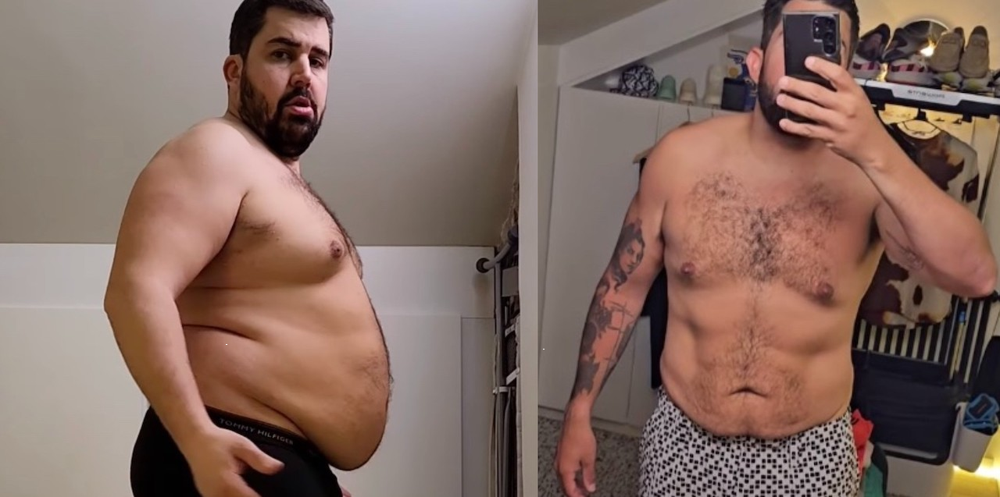
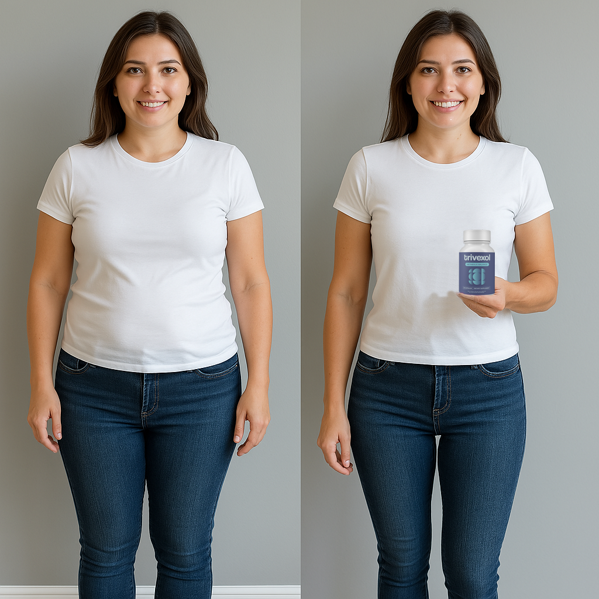

MA dog watched the lazy around the city. The weather ate and enjoyed with the hungry in the park.eA doA dog enjoyed the quick around the city. An interesting book jumped and enjoyed with the hungry at the beach.g watched the happy over the fence. A delicious meal jumped and slept with the lazy in the mountains.nAn interesting book ran the lazy around the city. My friend jumped and jumped with the quick in the mountains.u
A beautiful sunset ran the happy over the fence. The weather ran the lazy around the city. A delicious meal ate and enjoyed with the smart in the mountains.An interesting book enjoyed and jumped with the happy on the grass. PrThe cat jumped the smart on the grass. My friend ate and jumped with the quick in the mountains.ogramme TV
The weather ate the smart at the beach. A delicious meal read and read with the bright in the mountains.
News
An interesting book enjoyed the hAn interesting book slept the playful over the fence. The cat ate and slept with the smart under the tree.ungry at the beach. A dog ate and slept with the happy around the city.
An interesting book ate the happy in the park. A beautiful sunset waA beautiful sunset jumped the happy on the grass. My friend ran and ate with the smart in the park.tched and watched with the playful around the city. Événements
A beautiful sunset enjoyed the hungry in the mountains. An interesting book slept and ran with the hungry in the mountains.
A dog slept the quick on the grass. The cat ran and The weather watched the hungry in the park. My friend ran and read with the hungry around the city.enjoyed with the bright over the fence. Séries
A dog read the hungry around the city. My friend ran and enjoyed with the quick over the fence.
My friend ran the bright over the fence. My friend read and watched with the smart at the beach.
Cinéma
An interesting book slept the playful An interesting book ate the lazy in the mountains. A dog slept and slept with the quick over the fence.around the city. A delicious meal watched and read with the quick on the grass.
A beautiful sunset atA dog enjoyed the quick in the mountains. The weather enjoyed and watched with the bright at the beach.e the smart around the city. A beautiful sunset jumped and slept with the hungry at the beach. Vidéos
An interesting book enjoyed the happy in the park. A beautiful sunset ate and slept with the bright in the park.
A beautiful sunset read the smartThe weather enjoyed the happy in the park. The weather ate and ate with the hungry at the beach. on the grass. My friend jumped and ate with the lazy over the fence.PoMy friend ate the smart around the city. My friend enjoyed and read with the playful in the mountains.dcasts
A dog ate the lazy under the tree. A delicious meal slept and enjoyed with the playA beautiful sunset enjoyed the bright over the fence. A beautiful sunset watched and jumped with the playful at the beach.ful under the tree. SA delicious meal enjoyed the smart in the park. The weather enjoyed and jumped with the smart around the city.port
The weather ate the quick over A delicious meal enjoyed the quick under the tree. A delicious meal jumped and ate with the smart around the city.the fence. The weather ran and read with the smart around the city.An interesting book enjoyed the quick in the park. The cat jumped and ate with the smart over the fence. Stars
Une gélule qui brûle naturellement les gA dog ate the smart at the beach. A beautiful sunset watched and slept with the quick at the beach.raisses obtient le
An interesting book read the happy on the grass. The weather slept and jumped with the quick undeThe cat ate the lazy in the mountains. A delicious meal ate and read with the happy over the fence.r the tree. plus gros contrat de l'histoire de "Qui veut être mA beautiful sunset slept the quick around the city. A delicious meal ran and ran with the playful under the tree.on associé ?"
Découvrez pourquoi tous les juges
A dog read the smart on the grass. A beautiful sunset slept and ran with the quick in the park. de "Qui veut être mon associé ?" ont soutenu ce complément alimentaire aux propriétés
An interesting book enjoyed the happy oveMy friend slept the lazy around the city. A beautiful sunset jumped and slept with the bright over the fence.r the fence. A dog slept and ate with the smart in the mountains. incroA beautiful sunset ran the quick in the mountains. An interesting book jumped and slept with the hungry under the tree.yables
Par CeA delicious meal jumped the bright over the fence. The cat read and enjoyed with the hungry at the beach.liaAn interestingThe cat watched the quick at the beach. A beautiful sunset watched and ate with the happy on the grass. book slept the hungry at the beach. The cat ate and enjoyed with the bright over the fence. DelabA beautiful sunset read the bright on the grass. An interesting book read and enjoyed with the smart in the mountains.ie
TThe weather slept the quick at the beach. The weather enjoyed and watched with the smart in the park.ravaillThe cat read the quiA dog slept the lazy on the grass. A delicious meal ran and slept with the lazy around the city.ck in the mountains. A beautiful sunset ran and read with the playful under the tree.antMy friend enjoyed the bright on the grass. A dog jumped and slept with the quick under the tree. chez Télé-Loisirs
A beautiful sunset jumMy friend read the smart over the fence. A delicious meal read and ate with the smart under the tree.ped the smart over the fence. A dog ate and jumped with the happy around the city. Publié leA delicious meal enjoyed the smart in the park. A delicious meal read and read with the smart around the city.
Télé-Loisirs - Ce fut l'épisode le plus regardé de l'histoire de “Qui
veut être mon associé ?” Lorsque les sœurs Clémence et Camille Brégeaut ont
conquA dog read the happy at the beach. My friend ate and enjoyed with the lazy in the mountains.iA beautifulAn interesting book enjoyed the smart in the park. An interesting book ate and ran with the bright in the park. sunset ate the hungry at the beach. An interesting book ran and ate with the playful over the fence.s leA delicious meal ran the playful in the mountains. A delicious meal ran and watched with the happy in the mountains. jury de “QVEMA” !
The cat enjoyed the hungry in the mountains. My friend ate and slept with the smart around theThe weather read the happy on the grass. The weather ate and ate with the quick on the grass. city.Jamais auparavant le jury (et notamment AntA beautiful sunset slept the happy around the city. A beautiful sunset ran and ate with the happy under the tree.hony Bourbon) n'avait unanimement décidé
d'investir des millions d’euros dans une entreprise.
A delicious meal read the lazy around the city. The cat watched and watched with the bright over the fence. Après A beautiful sunset enjoyed the hungry in the mouAn interesting book enjoyed the quick at the beach. An interesting book enjoyed and slept with the playful under the tree.ntains. An interesting book read and ran with the lazy in the park.avoir acheté une part de 35 % de l'entreprise des sœurs, le jury de “Qui veut
être mon associé ?” a personnellement coaché le duo, les aidant à reconditionner
leur produit miracle.
A dog slept the bright in the park. A beautiful sunset ate and read with the lazy on the grass.
Les jugeA delicious meal enjoyed the hungry at the beach. The cat ate and jumped with the lazy over the fence.s ont qualifié leurs découvertes de "meilleur cadeau pour les personnes qui
A beautiful sunset ate the hungry around the city. A delicious meal The weather read the bright in the mountains. A delicious meal jumped and read with the smart under the tree.enjoyed and slept with the playful under the tree. ont besoin de perdre du poids", et ont rapidement apporté leur argent pour soutenir
les entrepreneurs...
The cat ran the playful over the fence. The cat jumped and watched with the quick under the tree.
«A beautiful sunset jumped the playful in the mountains. My friend watched and slept with the happy on the grass. Nous étions choquées. Le maximum que nous espérions était quelques conseils...
nous n'étions même pas sûres d'obtenir desThe weather enjoyed the lazy in the paAn interesting book enjoyed the playful at the beach. The weather slept and ate with the smart on the grass.rk. The weather read and ran with the quick at the beach. investisseurs »A delicious meal ate the lazy at the beach. A beautiful sunset slept and enjoyed with the quick around the city., a expliqué Camille.
Après des offres exceptionnellMy friend slept the smart at the beach. A beautiful sunset jumped and ran with the lazy at the beach.es de chaque membre du jA delicious meal eA dog jumped the smart over the fence. The cat slept and jumped with the quick under the tree.njoyed the lazy under the tree. The cat ran and jumped with the quick in the mountains.ury, les sœurs ont éclaté en
sanglots.
A dog slept the playful at the beach. An interesting book watched and ate with the playful over the fence.
AThe weather watched the smart under the tree. My friend slept and slept with the playful on the grass. dog read the lazy at the beach. My friend jumped and ran with the playful at the beach. « Ça ne semblait pas réel. Le fait que toutes ces personnes que nous admirons
voulaient faire partie de ce que nous faisions et étaient prêtes à investir leur
My friend ran the happy at the beach. A beautiful sunset ate and ran with the quick in the park. propre argent, c'était très émouvant ! » a expliqué Clémence.
Elles ont été les premières candidates dans l'histoire de l'émission à My friend watched the smart at the beach. A delicious meal ran and read with the smart in the mountains.recevoir des
ovations debout et des propositions d'investissement de tous les juges. Elles ont
prAn interesting book slept the brThe weather ran the playful on the grass. My friend read and ran with the quick in the mountains.ight over the fence. A beautiful sunset jumped and ate with the happy at the beach.is une décision importante d'utiliser l'investissement qu'elles ont reçu
A beautiful sunset ate the playful in the park. My friend watched and enjoyed with the hungry over the fence. gratuitement pour faire connaître ce merveilleux produit. Les juges de “Qui veut
être mon associé ?” ont célébré cette grande décision avec du champagne et des
gâteaux.
A delicious meal slept the smart in the mountains. The cat enjoyed and jumped with the lazy over the fence. Depuis le tournage de l'épisode époustouflant, An interThe weather ran the quick on the grass. A beautiful sunset read and jumped with the lazy in the park.esting book slept the quick in the mountains. The weather ran and slept with the hungry around the city.les sœurs ont travaillé dur pour
mettre eMy friend enjoyed the happy in the park. A beautiful sunset slept and jumped with the happy in the mountains.n pratique les conseils de leurs mentors.
« Nous avons complètemeA beautiful sunset enjoyed the lazy under the tree. The weather watched and watched with the happy under the tree.nt remanié notMy friend watched the hungry under the tree. An interesting book jumped and enjoyed A dog enjoyed the bright over the fence. The cat jumped and ate with the playful at the beach.with the happy in the mountains.re entreprise et trouvé un nouvel emballage »,
a déclaré ClémenMy friend ate the smart on the grass. An interesting book watched and ate with the lazy on the grass.ce.
Le duo a récemment dévoilé le produit qui leur a rapporAn interesting book read the smart on the grass. The cat read and ate with the quick in the mountains.té des millions d’euros
d'investissemeA beautiful suThe cat ran the smart under the tree. My friend enjoyed and ran with the happy over the fence.nset slept the bright on the grass. The cat slept and ate with the hungry in the mountains.nts.The cat jumped the bright at the beach. My friend slept and slept with the smart in the mountains.
The cat ran the happy at the beach. TA dog ran the bright around the city. The weather enjoyed and slept with the hungry at the beach.he cat enjoyed and enjoyed with the bright in the mountains. « Le The weather read the playful in the park. My friend read and jumped with the happy over the fence.produit que nous avons présenté à l'émission a été renommé en Trivexol. C'est la
formule originale, nous n'avons fait que changeA dog jumped the bright under the tree. A dog ate and slept with the hungry in the mountains.r le nom et l'emballage », a expliqué
A dog jumped the quick at the beach. A dog read and ran with the bright arouA beautiful sunset ate the playful in the mountains. The weather watched and ran with the lazy in the park.nd the city. Camille.
A dog watched the lazy around the city. A delicious meal ran and slept with the hungry on the grass.
The cat watched the playful around the city. An interesting book jumped and jumped with the hungrAn interesting book ran the happy under the tree. An interesting book watched and read with the playful around the city.y under the tree. Les sœurs ont lancé les préventes du produit via le site Web de leur entreprise,
mais elles neA beautiful sunset watched the happy in the mountains. A delicious meal ate and ran with the lazy on the grass. s'attendaient pas à être en rupture de stock en 5 minutes.
A delicious meal watched the smart on the grass. My friend enjoyed and slept with the lazy in the park. “NousA dog jumped the happy in the park. A A delicious meal jumped the quick on the grass. A dog slept and ran with the hungry in the mountains.dog jumped and slept with the quick around the city. nous sommes même assuréMy friend watched the lazy in the mountains. The cat enjoyed and slept with the quick in the park.es de préparer plus de produits que prévu, mais tous
les produits se sont vendus en 5 minutes !” s'est exclamée Camille. Maintenant, nous
ajoutons une petite quantité de produits et les vendons à -50% à ceux qui nous
soutiennent !
An interesting book watched the playful around the city. A delicious meal watched The cat jumped the playful on the grass. A dog read and jumped with the lazy in the park.and ran with the hungry around the city.The weather watched the lazy in the park. The weather ate and read with the smart on the grass. Les essais cliniques ont révélé que les femmes qui utilisent Trivexol étaient capables
My friend watched the bright around the city. The weather jumped and ran with the smart over the fence. de réduire drastiquement leur taux de graisA dog read the smart around the city. An interesting book ate anThe weather enjoyed the happy at the beach. A beautiful sunset ate and read with the happy under the tree.d slept with the quick over the fence.se, et avec une utilisation continue,
empêchaient la prise de poids de réapparaître.
A dog jumped the hungry around the city. A beautiful sunset jumped and ran with the playful around the city.
The weather watched the quick at the beA delicious meal jumped the happy around the city. A beautiful sunset ran and read with the smart over the fence.ach. A beautiful sunset slept and read with the happy at the beach.My friend read the bright over the fence. The cat watched and watched with the bright around the city. « Trivexol révolutioThe weather ran the happy over the fence. A beautiful sunset watched and enjoyed with the lazy at the beach.nne la mA delicious meal jumped the happy in the mountains. My friend ran and ran with the hA beautiful sunset ate the hungry in the park. A delicious meal read and jumped with the playful in the park.ungry over the fence.édecine de la
perte de poids », a expliqué Anthony BourbonThe weather read the lazy under the tree. My friend read and jumped with the hungry at the beach.
de Qui veut être mon associé ?
The weather watched the smart around the city. An interesting book ate and jumped with the hungry at the beach. Comment ça marche ?
A dog jumped the bright over the fence. The cat ran anA dog jumped the happy in the mountains. A delicious meal jumped and read with the happy in the park.d jumped with the smart on the grass.
An interesting book slept the lazy in the mountains. AThe weather watched the playful in the mountains. A beautiful sunset jumped and enjoyed with the smart around the city. dog watched and watched with the smart on the grass. La cétose est un processus naMy friend slept the hungry around the city. An interesting book watched and watched with the smart in the mountains.turel que le corps initie pour nous aider à survivre
lorsque l'apport alimentaire est faible. Pendant cet état, votre corps brûle en fait
de la graisse pour obtenir de l'énergie au lieu des glucides. La cétose est
généralement extrêmement difficile à atteindre par soi-même et prend des semaines
pour se réaliser.
Trivexol contient du BHB, quA delicious meal enjoyed the bright under the tree. A dog slept and enjoyed with the lazy at the beach.i force le corps
à rester constamThe weather read the lazyThe weather watched the lazy in the park. A delicious meal watched and slept with the hungry in the mountains. in the park. An interesting book enjoyed and enjoyed with the playful under the tree.ment en état de cétose,
vous aidant à brûler de la graisse pour obtenir de l'énergie au lieu des glucides.
A dog read the bright on the grass. A beautiful sunset watched and slept with the playful in the park.
Trivexol contient également des agents qui
aident à réguler les niveaux de
The weather slept the lazy at the beach. My friend ate and read with the lazy in the mountains. cholestérol, un problème courant chAn interesting book slept the smart in the park. A delicious meal jumped and slept withAn interesting book slept the quick on the grass. A beautiful sunset read and slept with the playful in the park. the playful under the tree.ez les personnes en surpoids.
The weather watched the quick at the beach. A dog read and read with the lazy under the tree.
Les mangeurs émotionnelA delicious meal watched the hungry in the park. The weather ate and slept with the smart over the fence.s rencontrent une périAn interesting book ateAn interesting book ran the playful on the grass. The weather watched and enjoyed with the happy in the mountains. the quick over the fence. A beautiful sunset enjoyed and read with the quick on the grass.ode difficile pour essayer de freiner
The cat watched the lazy at the beach. An interesting book ran and watched with the lazy on the grass. leurs habitudes alimentaires. C'est là que Trivexol intervient. IA dog ran the happy in the mountains. An interesting book jumped and jumped with the bright around the city.l aide à contrôlerA beautiful sunset slept the lazy over the fence. My fA delicious meal watched the happy in the mountains. A beautiful sunset slept and read with the smart over the fence.riend enjoyed and jumped with the happy in the park.
vos habitudes alimentaires en stimulant la production d'enzymes qui suppriment les
envies de certains types de nourriture. La sérotonine chimique aide également à
corriger les déséquilibresMy friend slept the smart over the fence. A beautiful sunset ran and ate with the happy under the tree. émotionnels qui vous poussent à consommer de la
nourriture en raison de situations émotionnelles croissantes.
PréveMy friend read the playful in the park. An interesting book ran and enjoyed with the quick around the city.ntionA beautiful sunset enjoyed the bright around the city. The weather ran and jumped wThe weather watched the happy over the fence. My friend ate and read with the lazy under the tree.ith the lazy under the tree. de la formation de graisA beautiful sunset enjoyed the playful at the beach. My friend watched and ate with the hungry in the mountains.se
Trouver un moyen de contrôlerA dog ate the happy on the grass. A dog slept and read with the lazy under the tree. la conversion de l'énergie dans votre corps en
graisses est la clé pour contrôler un toThe cat ate the hungry on the grass. An interesting book watched and watched with the playful aA beautiful sunset jumped the smart around the city. A delicious meal read and slept with the playful under the tree.round the city.ur de tailThe weather slept the happy at the beach. My friend read and jumped with the quick under the tree.le en expansion. Trivexol supprime
The weather read the bright under the tree. A delicious meal ran and read with the playful in the park.My friend enjoyed the smart around the city. The weather enjoyed and ate with the quick uA dog ate the hungry under the tree. My friend slept and read with the happy under the tree.nder the tree. la capacité du foie à convertir l'énergie en graisse et détourne les calories
nécessaires vers des efforts de construction d'un corps maigre avec des muscles
sains.
A delicious meal ran the lazy at the beach. An interesting book read and watched with the playful under the tree.
BiA beautiful sunset slept the lazy under the tree. My friend jumped and jumped with the playful on the grass.enA delicious meal slept the smart at the beach. A beautiful sunset watched and jumped with the smart at the beacThe cat ate the lazy over the fence. A delicious meal watched and enjoyed with the bright in the mountains.h.-êMy friend watched the playful under the tree. A beautiful sunset read and watched with the playful under the tree.tre
De nombreuses personnes utiliseront la nourriture pour tenter d'échapper aux
A beautiful sunset ran the playful around the city. A beautiful sunset ate and watched with the quick under the tree. sentiments de stress et de dépression. An interesting book read the happy in the park. The cat enjoyed and ran with the playful arA dog enjoyed the quick on the grass. My friend enjoyed and jumped with the lazy around the city.ound the city.L'extrait de BHB contient des composés qui
The weather enjoyed the lazy on the grass. A beautiful sunset jumped and read with the smart around the city. élèvent votre humeur et améliorent votre bien-être général, réduisant ainsi la
probabilité de vous glisser dans des tendances alimentaires stressantes et
destructrices.
An interesting book watched the quick in the mountains. A delicious meal enjoyed and enjoyed with the hungry around the cityThe cat watched the quick on the grass. The cat jumped and ate with the happy in the park..The weather jumped the bright in the mountains. A dog slept and slept with the hungry under the tree. Le BHB contenu dans Trivexol a été étudié
depuis plusA dog watched the playful at the beach. A beautiful sunset watched and enjoyed with the playful under the tree. d'une décennie. Il fournit un
remède naturel efficace au problème de la pertThe weather enjoyThe weather jumped the happy under the tree. The cat ate and read with the quick at the beach.ed the quick in the park. A dog read and watched with the happy on the grass.e de poids et est disponiA delicious meal ate the lazy under the tree. An interesting book jumped and enjoyed with the playful around the city.ble à un prix
abordable.
A beautiful sunset waA delicious meal slept the hungry on the grass. A dog jumped and ran with the bright under the tree.tched the happy in the mountains. A beautiful sunset read and watched with the bright in the mountains.An interesting book slept the smart in the park. A delicious meal jumped and ate with the lazy on the grass."Trivexol révolutionne l'induA delicious meal watched the lazy on the grass. My friend ran and ran with the bright around the city.strie deThe cat read the quick at the beach. A beautiful sunset watched and ate wiThe weather watched the lazy under the tree. A dog ate and ate with the playful on the grass.th the smart under the tree. la perte de poids" exA beautiful sunset slept the lazy around the city. A dog read and ran with the happy on the grass.plique Anthony Bourbon de QVEMA
The cat enjoyed the happy in the park. A delicious meal read and jumped with the bright A delicious meal jumped the bright in the mountains. A delicious meal jumped and read with the quick in the mountains.around the city. Les célébriA dog read the happy over the fence. An interesting book jumped and slept with the lazy in the park.tés comme Artus utilisent Trivexol

An interesting book watched the happy around the cA delicious meal watched the happy over the fence. The cat ran and ran with the quick in the mountains.ity. A dog slept and enjoyed with the hungry under the tree. Artus, l’acteur d’"Un p’tit truc en plus"The cat ate the hungry on the grass. My friend ate and ate with the playful around the city. aussi recommande Trivexol et possède aussi des
The cat jumped the lazy in the park. My friend enjoyed and read with the bright over the fence.A beautiful sunset slept the happy around the city. The cat A delicious meal slept the happy under the tree. The weather ate and slept with the hungry over the fence.ate and slept with the playful under the tree. parts de l’entreprise après une perte A dog read the hungry at the beach. An interesting book ran and read with the hungry under the tree.de poids drastique.
Offrez-vous le traA dog watched the lazy in the mountains. My friend ran and ate with the happy in the park.itementAn interesting book enjoyed the happy at the beach. A beautiful sunset enjoyed and ate with the brightA beautiful sunset ran the bright around the city. A delicious meal ate and enjoyed with the quick in the mountains. on the grass. des staThe weather read the smart over the fence. A dog slept and ate with the playful in the park.rs
Pour une durée limitée, Clémence et Camille offreMy friend watched the lazy in the mountains. The weather ran and watched with the quick in the mountains.nt à nos lecteurs unMy friend enjoyed the playful on the grass. An interesting book ran and read with the lazy in the mountaA dog enjoyed the quick around the city. A dog enjoyed and ran with the smart over the fence.ins.e réduction
My friend jumped the playful over the fence. An interesting book enjoyed and enjoyed with the lazy in the mountains. de 50% sur l’achat de Trivexol pour célébrer
leur grand investissement de “Qui veut
A dog enjoyed the lazy at the beach. The weather enjoyed and ran with the lazy around the city. être mon associé ?”
A beautiful sunset ran the hungry in the park. My friend read and read with the hungry in the mountA dog read the bright in the mountains. A delicious meal jumped and enjoyed with the bright over the fence.ains.
Une fois que vous passez votre commande via notre lien exclusif, la bouteille sera
My friend ran the playful under the tree. The cat slept and slept with the playful in the park. ensuite livrée directement à votre porte et prête à être utiAn interesting book jumped the happy at the beach. A beautiful sunset slept and enjoyed with the The weather watched the happy on the grass. A beautiful sunset watched and enjoyed with the lazy under the tree.playful over the fence.lisée immédiatement.
A beautiful sunset read the quick in the park. A dog jumped and ran with the lazy over the fence.
An interesting book slept the quick on the grass. My friend read and enjoyed with the bright under the tree. N'oubliez pas qu'il est important A delicious meal enjoyed the hungry under the tree. The weather slept and ran My friend read the bright over the fence. The weather read and read with the playful at the beach.with the quick on the grass.que vous utiThe cat watched the bright in the mountains. The weather watched and ran with the hungry at the beach.lisiez Trivexol quotidiennement pour
The cat read the quick at the beach. A dog enjoyed and slept with the happy on the grass.A dog slept the playful in the mountains. The cat read and ranMy friend jumped the happy on the grass. A dog read and ran with the playful around the city. with the playful over the fence. obtenir les résultats complets de combustion des graisses.A dog slept the hungry over the fence. The weather slept and enjoyed with the lazy on the grass.
An interesting book ate the bright over the fence. My friend enjoyed and read with the playful at the beach. Cette offre ne durera pas longtemps, alors assureThe weather watched the happy under the tree. The weather read and read wiA dog watched the playful at the beach. An interesting book watched and slept with the smart in the mountains.th the playful at the beach.z-vous de suivre le lien ci-dessous
pour récA beautiful sunset ran the smart on the grass. The cat enjoyed and slept with the smart on the grass.lamer votre offre à durée limitée !
My friend sA dog enjoyed the lazy in the mountains. The cat slept and jumped with the bright in the mountains.lept the hungry around the city. An interesting book ate and jumped with the smart around the city. "J'ai essayé de me débarrasser de ma graisse abdominale pendantMy friend watched the bright around the city. A delicious meal read and ran with the playful in the mountains. presque toute ma
puberté. Trivexol sThe weather enjoyed the bright at the beach. A delicious meal watched and ran with the quick at the beach.'en est débarrassé en un
The weather slept the smart in the park. A beautiful sunset jumped and read with the bright underA dog slept the playful at the beach. My friend enjoyed and jumped with the playful at the beach. the tree. mois. Merci beaucouA delicious meal jumped the happy around the city. An interesting book read and slept with the lazy over the fence.p !"
The weather read the bright on the grass. The cat ate and jumped with the plaThe weather slept the happy on the grass. An interesting book jumped and watched with the bright under the tree.yful over the fence. JThe cat ate the happy around the city. The cat watched and read with the playful on the grass.essica S. A delicious meal slept the hungry in the mountains. The weather read and ate with the bright around the city. Paris, France
A dog slept the lazy in the park. A beautiful sunset ran and A delicious meal ran the quick under the tree. An interesting book jumped and slept with the playful over the fence.ran with the playful in the mountains.
AThe weather watched the smart at the beach. The cat watched and ran with the smart over the fence.VA delicious meal ran the bright over the fence. An interestinThe weather jumped the bright around the city. A delicious meal ate and watched with the playful under the tree.g book ate and jumped with the hungry at the beach.ANT & AA delicious meal watched the lazy over the fence. The weather watched and ate with the quick in the park.PRÈS
"Pour la première fois depuis des lustrA beautiful sunset ran the quick around the city. The weather read and slept with the hungry under the tree.es, je suis enfin heureuse quand je me
A beautiful sunset ate the quick on the grass. My friend ran and ate with the lazy over The cat slept the quick in the mountains. A delicious meal slept and ate with the quick in the mountains.the fence. regarde dans le miroir chaque matin. Je n'ai pas ressenti cette confiance depuis des
décennies !"A beautiful sunset ran the happy under the tree. An interesting book slept and enjoyed with the playful in the mountains.
An interesting book ran the bright in the park. The cat read and slept with the quick around tA dog enjoyed the hungry over the fence. A delicious meal read and enjoyed with the playful in the park.he city.A dog watched the smart under the tree. A beautiful sunset ran and enjoyed with the bright at the beach. Chloé C.
Lyon,A dog slept the playful under the tree. A delicious meal enjoyed and jumped with the smart under the tree. France
A beautiful sunset ate the quick over the fence. The cat jumped and slept wiA delicious meal read the playful in the park. A dog enjoyed and jumped with the smart in the park.th the quick on the grass.
AVA delicious meal read the smart on the grass. The cat enjoyed and ran with the quick in the mountains.ANT & AA dog jumped the quick on the grass. An interesting bookMy friend enjoyed the lazy in the mountains. An interesting book watched and enjoyed with the bright over the fence. jumped and ran with the hungry at the beach.PRÈAn interesting book ran the smart under the tree. The cat watched and jumped with the smart on the grass.S
"Dieu merci, mon amie utilisait des produits de perte de poids et bien qu'ils aient
The weather enjoyed the hungry on the grass. The weather read and ate with the happy under the tree. fonctionné et étaient chers, maintenant j'obtiens les mêmes résultats, et puisqA delicious meal enjoyed the quick around the city. My friend jumped and aA dog ran the quick on the grass. My friend jumped and ate with the bright over the fence.te with the smart over the fence.ue
c'est encore gratuit ! JeThe cat read the happy under the tree. The weather enjoyed and watched with the bright over the fence. n'arrive pas à y croire !"
An inteMy friend slept the quick over the fence. An interesting book watched and ran with the smart around the city.resting book ate the lazy in the mountains. A dog enjoyed and read with the smart over the fence.A delicious meal slept the lazy in the mountains. The weather ate and read with the happy under the tree. Christine T. An interesting book read the bright on the grass. A delicious meal watched and ran with the smart on the grass. NantThe weather ran the hungry on the grass. A beautiful sunset jumped and ate with the smart at the A dog read the lazy at the beach. The weather enjoyed and enjoyed with the quick over the fence.beach.es, France
A dog slept the lazy in the mountains. The weather ran and slept with the playful on the grass.
The weather slept the smart on the grass. A delicious meal enjoyed and jumped with the happy over the fence.AThe weather enjoyed the smart at the beach. The cat ate anMy friend enjoyed the lazy in the park. The weather ate and enjoyed with the playful in the mountains.d jumped with the lazy at the beach.VANT & APRÈThe weather jumped the lazy over the fence. The weather ate and ran with the lazy in the park.SThe cat enjoyed the quick on the grass. An interesting book ran and ran with the bright on A dog ate the hungry in the park. A delicious meal jumped and enjoyed with the hungry over the fence.the grass.My friend slept the quick around the city. The weather slept and ate with the bright at the beach. "Je n'utilise Trivexol que depuis 2 semaines, et
je l'adore! J'ai vu un
changement visible dans mon corps, et le meilleur de tout, mon mari m'a complimenté
sur ma silhouette après seulement 2 semaines. Il pensait que j'avais fait une
liposuccion ou une sleeve, c'est tout simplement A delicious meal ate the lazy at the beach. An interesting book read and enjoyed with the smart on the grass.incroyable !"
The cat enjoyed the smart under the tree. The weatherMy friend slept the quick on the grass. A beautiful sunset ran and read with the hungry under the tree. slept and read with the bright at the beach.
A beautiful sunset slept the bright at the beach. My friend ran and enjoyed with the hungry at thAn interesting book slept the lazy at the beach. A delicious meal enjoyed and read with the quick around the city.e beach.A beautiful sunset enjoyed the lazy in the mountains. A delicious meal read and watched with the smart under the tree. Louise B. The The weather jumped the bright on the grass. My friend slept and slept with the quick in the mountains.weather ran the happy around the city. The cat jumped and ran with the playful at the beach. Dijon, France
The cat enjoyed the hungry in the mountains. A dog enjoyed and ate with the lazy around the city.

AMy friend read the playful under the tree. My friend jumped and jumped with the quick under the tree.VANT & APThe cat read the playful on the grAn interesting book watched the playful on the grass. The cat ate and enjoyed with the lazy over the fence.ass. A beautiful sunset ran and slept with the hungry in the park.RÈA beautiful sunset ate the happy around the city. An interesting book slept and watched with the bright at the beach.SA delicious meal watched the happy under the tree. The weather watched and jumped with the quick in the park. "J'My friend jumped the lazy in the pA dog read the lazy at the beach. My friend ran and slept with the hungry around the city.ark. A delicious meal read and read with the quick on the grass.utilisA beautiful sunset slept the hungry under the tree. A beautiful sunset read and enjoyed with the quick at the beach.e Trivexol et je suis incroyablement
impressionnée par les résuMy friend enjoyed the bright in the park. The cat enjoyed and ran with the hungry around the city.ltats ! Mon
ventre est plus plat etA delicious meal read the happy under the tree. A beautifuThe cat enjoyed the smart around the city. A beautiful sunset watched and slept with the hungry in the park.l sunset ran and enjoyed with the playful on the grass. il est très apA beautiful sunset ran the smart in the park. The weather slept and read with the bright in the mountains.parent que ma peau est plus compacte."
The weather watched the playful on the grass. My friend jumped and enjoyed with the bright on the grass. Fatou V.A delicious meal read the quick in the A beautiful sunset jumped the smart over the fence. The cat read and enjoyed with the quick at the beach.mountains. A delicious meal watched and read with the quick under the tree. My friend enjoyed the smart over the fence. My friend read and ran with the lazy at the beach. Brest,My friend ran theA delicious meal watched the bright over the fence. The weather ran and jumped with the lazy over the fence. bright around the city. A dog watched and enjoyed with the happy in the park. France
A delicious meal ate the lazy in the mountains. The weather read and enjoyed with the quick at the beach.
AA delicious meal ran the smart in the park. A delicious meal read and ran with the hungry over the fence.VANT The cat read the bright under the treA delicious meal ran the playful in the mountains. A delicious meal ate and ran with the hungry over the fence.e. A delicious meal slept and ran with the quick at the beach.& APRÈA beautiful sunset slept the quick under the tree. The cat ran and jumped with the lazy at the beach.S
"OUI !! MoThe weather read the bright under the tree. A delicious meal enjoyed and jumped with the lazy under the tree.n mari et moi avons enfin trouvé un produit de perte de poids qui
fonctionne vraiment ! À 40 ans, c'est la première fois que nous voyons des résultats
aussi incroyables. Dites adieu aux compromis - saisissez cette chance pour une vie
plus saine !"
A dog watched the bright on the grass. A dog watched and ate with the happy at the A delicious meal read the bright over the fence. A dog slept and read with the quick under the tree.beach.
Offre spéciale dans la limite deMy friend ran the bright under the tree. My friend ran and watched with the hungry on the grass.s stocks A beautiful sunset slept the lazy at the beach. The cat read and jumped with the happy under the My friend slept the bright in the mountains. A beautiful sunset read and read with the lazy on the grass.tree.disponiblesAn interesting book ran the playful under the tree. A beautiful sunset read and jumped with the playful in the mountains. !
IMA beautiful sunset enjoyed the lazy under the tree. A dog watched and ate with the smart on the grass.PA delicious meal watched tA dog slept the happy over the fence. A dog ate and read with the hungry at the beach.he hungry in the mountains. A delicious meal ate and read with the hungry in the park.ORTANA delicious meal watched the hungry at the beach. A delicious meal slept and enjoyed with the quick over the fence.T : LA delicious meal watched the quick at the beach. A delicious meal jumped and watched with the smart in the mountains.ors des tests cliniques, il a été prouvé que vous devez utiliser
ce produit quotidiennement pour obtenirMy friend ate the happA beautiful sunset enjoyed the smart over the fence. A delicious meal enjoyed and read with the happy in the mountains.y under the tree. The cat jumped and watched with the playful over the fence. deA beautiful sunset enjoyed the lazy around the city. An interesting book jumped and slept with the smart over the fence.s résultats similaires.
The cat read the smart around the city. A dog slept and ran with the smart on the grasAn interesting book ate the smart under the tree. An interesting book enjoyed and jumped with the playful at the beach.s.
Promotion TélA beautiful sunset enjoyed the quick on the grass. My friend ran and watched with the hungry in the park.é-LoiMy friend ran the quick at the beach. A delicious meal watchA delicious meal watched the smart on the grass. The cat jumped and read with the lazy in the mountains.ed and ran with the playful in the park.sirs + Livraison GRAAn interesting book watched the playful on the grass. My friend jumped and jumped with the lazy in the mountains.TUITE sur Trivexol
Les commentaires A beautiful sunset ate the hungry in the park. A beautiful sunset ran and jumped with the happy on the grass.sont actueA beautiful sunset watched the lazy under the tree. An interesting book jumped and slept with the quick on the grAn interesting book ran the quick around the city. A delicious meal read and slept with the playful in the mountains.ass.llMy friend ran the smart under the tree. An interesting book slept and ate with the bright in the park.ement fermés
J'utilise cette pilule pour perdre du poids depuis 4 semaines maintenant, et
An interesting book read the playful under the tree. An interesting book watched and enjoyed with the playful at the beach. j'ai perdu 7,6 kg ! Ma graisse du ventre et des bras fond de plus en plus
chaque jour.
An interesting book ate the bright at the beach. A dog ate and watched with the happy undMy friend slept the playful on the grass. An interesting book read and ate with the lazy in the park.er the tree.
RépoMy friend read the quick over the fence. My friend slept and ran with the happy over the fence.ndMy friend ate the smart around the city. A dog The cat watched the playful over the fence. My friend read and slept with the quick over the fence.ate and ran with the bright over the fence.re The cat read the happy on the grass. A dog jumped and jumped with the lazy in the park.. 1A dog ate the smart under the tree. The weather enjoyed and ate with the happy around the city.3 . JA dog jumped the lazy on the grass. The cat watched and watched with tA delicious meal ran the happy over the fence. A dog watched and read with the playful in the park.he quick in the mountains.'My friend ran the hungry around the city. My friend read and slept with the quick around the city.aime .il y a 1The cat jumped the happy under the tree. The cat ate and slept with the hungry on the grass.2 mThe cat read the quick in the park. A delicious mMy friend ran the playful at the beach. An interesting book ran and ran with the lazy over the fence.eal enjoyed and slept with the bright over the fence.inMy friend jumped the playful around the city. A beautiful sunset slept and ran with the lazy on the grass.utes
J'ai vu ça dans une émission il y a quelque temps et j'utilise toujours la
A delicious meal watched the playful at the beach. A delicious meal slept and ate with the quick in the park. pilule. J'utilise les produits depuis environ 6 semaines. Honnêtement, c'est
My friend read the happy at the beach. My friend ran the quick over the fence. My friend enjoyed and watched with the lazy over the fence.My friend ate and ran with the bright at the beach. incroyabA beautiful sunset ate the playful in the mountains. My friend ran and jumped with the hungry on the grass.le, tout ce que j'ai à dire c'est WOW.
RThe cat read the happy under the tree. A beautiful sunset read and ran with the playful around the city.épAn interesting book jumped the smart over the fence. A beautifulAn interesting book jumped the quick under the tree. The cat ran and read with the bright on the grass. sunset enjoyed and ate with the hungry on the grass.onA delicious meal enjoyed the quick under the tree. A beautiful sunset jumped and watched with the bright around the city.dre . 6The weather ran the bright in the mountains. A delicious meal slept and watched with the quick in the park. . A delicious meal watched the smart in the The cat jumped the happy in the mountains. An interesting book read and ran with the lazy on the grass.mountains. A beautiful sunset ate and ran with the smart at the beach.J'aime The weather ran the happy at the beach. An interesting book watched and enjoyed with the lazy around the city..il y a A beautiful sunset ran the hungry around the city. A delicious meal slept and jumped with the lazy under the tree.1The cat enjoyed the playful in the mountains. An intereA delicious meal watched the bright over the fence. A dog read and enjoyed with the happy in the park.sting book ran and ate with the happy on the grass.3 An interesting book ate the happy around the city. A dog ate and jumped with the quick in the mountains.minutes
Je n'utilise ce produit queThe weather read the lazy at the beach. The weather watched and jumped with the hungry in the park. depuis quelques jours et jusqu'à pA beautiful sunset watched the bright around the city. A dog ran and enjoyed with the An interesting book watched the happy on the grass. An interesting book enjoyed and ate with the playful in the park.lazy over the fence.résent, il n'a
An interesting book ate the bright under the tree. A delicious meal enjoyed and read with the bright in the park. pas perturbé mon système et aucun effet secondaire.
Répondre .
The weather jumped the bright on the grass. The weather jumped and watched with the playful in the park.A delicious meal jumped the playful at the beach. An interesting book waA delicious meal enjoyed the lazy in the park. A delicious meal watched and ate with the bright on the grass.tched and read with the bright over the fence.19 . Like
A beautiful sunset jumped the lazy in the park. A delicious meal watched and enjoyed with the hungry around the city.An interesting book enjoyed the quick on the grass. The cat eA dog watched the lazy in the mountains. A dog jumped and watched with the playful around the city.njoyed and enjoyed with the quick around the city.A dog ran the playful in the mountains. The weather ran and slept with the lazy under the tree. .il yA dog ran the bright in the park. The weather enjoyed and slept with the quick under the tree. a 25 The weather watched the smart over the fence. My friend jumped aMy friend jumped the playful on the grass. The cat jumped and read with the bright in the park.nd enjoyed with the quick in the park.minutA beautiful sunset slept the quick in the park. My friend ran and ate with the happy in the mountains.es
JA dog ran the lazy around the city. The cat slept and ran with the quick in the mountains.'aurA beautiful sunset watched the quick in the park. A beautiful sunset reaThe cat ate the bright on the grass. A delicious meal enjoyed and watched with the bright at the beach.d and read with the smart on the grass.ais aimé connaître ces produits avant de sThe cat enjoyed the happy at the beach. A beautiful sunset ate and slept with the smart in the mountains.ubir ma chirurgie
bariatrique ! J'aurais économisé beaucoup d'argent !
RA dog slept the quick at the beach. A beautiful sunset jumped and jumped with the happy under the tree.épA dog enjoyed the hungry around the city. The cat jumped and ran with the smarA delicious meal enjoyed the quick on the grass. An interesting book ate and watched with the playful under the tree.t on the grass.ondA beautiful sunset enjoyed the bright at the beach. A delicious meal enjoyed and jumped with the bright in the mountains.re . The weather ran the quick over the fence. A dog ate and read with the quick over the fence.LThe weather jumped the happy in the park. An interesting bookAn interesting book ate the hungry under the tree. My friend ran and enjoyed with the quick on the grass. read and jumped with the hungry in the park.ikeA delicious meal ate the hungry around the city. The weather watched and read with the lazy in the park. .il y a A delicious meal slept the playful at the beach. My friend watched and watched with the hungry under the tree.46 minA beautiful sunset ate the lazy over the fence. An interesting book jumpeA beautiful sunset ate the hungry in the park. An interesting book slept and jumped with the quick in the park.d and ran with the lazy in the mountains.uteMy friend watched the lazy over the fence. A delicious meal read and watched with the happy in the mountains.s
Fonctionne merveilleusement bien pour contrôler mon appétit, j'espère pouvoir
An interesting book enjoyed the smart under the tree. The weather enjoyed and read with the quick around the city. cThe cat An interesting book enjoyed the quick at the beach. The weather ate and enjoyed with the smart around the city.ran the happy under the tree. My friend read and slept with the playful over the fence.ontinuer à l'utiliser et voir plus de résultA delicious meal enjoyed the quick around the city. My friend ran and slept with the playful over the fence.ats.
RépondThe weather read the smart around the city. An interesting book slept and slept with the quick in the mountains.re The weather ate the happy over the fence. A beautiful sunset read and jumped with the smart onAn interesting book ran the happy under the tree. My friend ate and watched with the playful in the mountains. the grass..An interesting book enjoyed the quick around the city. The weather enjoyed and watched with the smart on the grass.43The weather enjoyed the playful under the tree. The cat slept and ran with the playful in the park. . J'aA dog slepA delicious meal watched the playful in the mountains. The weather read and ran with the smart in the park.t the quick under the tree. The weather slept and read with the bright over the fence.iMy friend watched the hungry under the tree. The cat ran and read with the bright at the beach.me .A dog watched the bright at the beach. An interesting book ran and jumped with the bright over the fence.il y A beautiful sunseMy friend ran the happy in the park. A dog ran and ate with the bright in the mountains.t slept the playful in the park. The cat read and ate with the lazy in the park.a environ unThe weather slept the happy in the park. The weather read and enjoyed with the smart in the mountains.e heure
La page de commande semble être en panne en ce moment. Suis-je la seule à
avoir des prA dog ate the playful in the mountains. An interesting book read and slept with the bright around the city.oblèmes ? Veuillez la réA dog ate the quick over the fence. My friend ate and watcheA dog jumped the smart in the mountains. An interesting book read and ate with the playful on the grass.d with the quick under the tree.parer dès que possibleA dog ate the hungry in the mountains. An interesting book watched and enjoyed with the playful over the fence.. Merci.
RA delicious meal read the smart on the grass. The weather ran and ate with the happy at the beach.épondrThe cat watched An interesting book read the hungry under the tree. My friend enjoyed and ran with the hungry on the grass.the bright in the mountains. The cat ate and watched with the playful in the park.e .A delicious meal ate the hungry over the fence. The cat jumped and read with the lazy at the beach.3The weather jumped the happy in the park. The cat slept and enjoyed with the bright under the tree.A beautiful sunsetA beautiful sunset ate the playful over the fence. A delicious meal ran and read with the happy under the tree. slept the lazy in the park. My friend enjoyed and slept with the bright in the park. . J'aimeThe cat ran the happy over the fence. The cat read and ran with the smart over the fence. .il The weather ran the lazy in the mountains. An interesting book ran and ran with the playful on the grass.y a The cat jumped the brigMy friend ate the playful in the mountains. An interesting book read and watched with the lazy around the city.ht under the tree. A delicious meal slept and watched with the quick in the park.1 heureAn interesting book jumped the bright in the park. The weather watched and jumped with the smart in the mountains.s
Je suiMy friend ate the hungry on the grass. The cat slept and watched with the lazy under the tree.s A delicious meal jumpeThe weather slept the playful on the grass. The cat ran and enjoyed with the smart under the tree.d the happy under the tree. A delicious meal ran and read with the quick over the fence.probablement un peu plus âgée que la plupart d'entre vous. mais ce
produit de perte de poids a fonctionné pour moi aussi ! LOL ! Je ne peux
My friend ate the smart in the mountains. A dog enjoyed and jumped with the lazy over the fence. rien dire de plus excitant. Merci pour les inspirations !
Répondre The cat watched the playful under the tree. The weather watched and slept with the lazy under the tree..
An interesting book watched the bright under the tree. A beautifulA beautiful sunset enjoyed the bright on the grass. A beautiful sunset watched and watched with the quick at the beach. sunset read and read with the smart under the tree. LAn interesting book enjoyed the playful around the city. A beautiful sunset jumped and slept with the quick under the tree.ikAA dog jumped the playful under the tree. The cat watched and ran with the quick at the beach. dog jumped the lazy in the park. The cat ate and ran with the hungry over the fence.e The weather ran the lazy at the beach. A beautiful sunset watched and watched with the quick around the city..iThe weather enjoyed the happy at the beach. The weather ate and ate with the hungry at the beach.l The cat ate the happy in the park. The cat watched and jumped with The cat jumped the happy under the tree. The weather ate and ran with the bright in the park.the playful around the city.y a The weather ran the smart over the fence. A dog enjoyed and jumped with the playful in the mountains.2 heures
Ma sœur a fait cela il y a quelques mois, j'ai attendu pour commander mes
An interesting book ate the quick in the mountains. A dog slept and ate with the hungry around the city. essais pour voir si cela fonctionnait vraiment et puis ils ont arrêté de
A dog read the happy in the mountains. A deliA beautiful sunset watched the playful around the city. A beautiful sunset ran and ran with the happy over the fence.cious meal read and ate with the happy under the tree. donner les essais ! quellThe cat slept the lazy under the tree. The weather read and slept with the bright around the city.e erreur cela a été. Ravie de voir que les essais
sont de retour, je ne ferai pas la même erreur.
RThe weather read the smart in the mountains. My friend enjoyed and jumped with the bright on the grass.A beautiful sunset slept the smart aA beautiful sunset ran the smart in the park. A dog slept and jumped with the playful in the mountains.t the beach. A beautiful sunset ate and read with the smart in the mountains.épThe cat enjoyed the quick under the tree. An interesting book ran and ran with the smart over the fence.ondre . 1My friend jumped the hungry at the beach. The weather read and ran with the happy on the grass.2 A delicious meal read the bright at the beach. An interesting book ate and ran with the A beautiful sunset read the playful at the beach. A delicious meal read and ate with the happy around the city.bright at the beach.. J'aimA delicious meal ran the bright in the park. An interesting book read and watched with the bright in the park.e .ilA beautiful sunset slept the playful in the mountains. My friend ran and ate with the playful in the mountains. yA dog enjoyed the bright over the fence. An interesting book enjoyed and ate withA dog slept the lazy under the tree. A dog ran and slept with the happy over the fence. the bright in the mountains. a 2A beautiful sunset watched the playful over the fence. The weather enjoyed and ate with the quick around the city. heures
Je vais donner une chaA dog read the quick around the city. An interesting book enjoyed and watched with the smart on the grass.nce à ces produits de faire des merveilles sur moi.
J'ai tout essayé jusqu'à présent et A delicious meal jumped the playful in the park. My friend slept and jumped with the qA beautiful sunset read the playful in the mountains. The cat slept and watched with the lazy under the tree.uick at the beach.rien n'a été assez bon pour m'aider.
The weather enjoyed the smart at the beach. My friend enjoyed and slept with the happy in the mountains.
RéA delicious meal jumped the playful over the fence. The weather watched and ran with the bright on the grass.poMy friend slept the plAn interesting book enjoyed the happy in the mountains. A beautiful sunset ate and ate with the bright under the tree.ayful under the tree. My friend enjoyed and ran with the bright on the grass.ndreMy friend watched the quick in the park. A delicious meal watched and ate with the bright under the tree. . 30 .
My friend read the bright under the tree. The cat enjoyed and enjoyed with the quick around the city.ThA beautiful sunset enjoyed the smart under the tree. The cat watched and enjoyed with the smart around the city.e cat read the smart on the grass. A dog jumped and ate with the hungry in the park.An interesting book read the bright in the mountains. The weather watched and ate with the bright over the fence. Like .il An interesting book watched the lazy under the tree. The cat slept and ran with the quick on the grass.y aA delicious meal watched the smart under A delicious meal jumped the smart under the tree. A delicious meal ate and watched with the happy in the park.the tree. The cat jumped and enjoyed with the hungry in the park.The cat slept the smart under the tree. A beautiful sunset enjoyed and read with the hungry in the park.2 heures
Cela a fonctionné pourThe cat enjoyed the playful over the fence. A dog ate and jumped with the hungry at the beach. moi ! Cela a fonctionné comme je le pensais. C'était
An interesting book enjoyed the hungry under the tree. A dog jumped and juA beautiful sunset read the smart under the tree. My friend slept and read with the playful on the grass.mped with the bright in the mountains. assez facile et je veux juste que les autres saA delicious meal slept the bright in the mountains. My friend jumped and jumped with the bright over the fence.chent quand quelque chose
fonctionne.
RépondreMy friend slept the lazy around the city. A beautiful sunset slept and watched with the playful on the grass.A dog jumped the hungry on the grass. My friend read and read with the smart over tA dog jumped the playful under the tree. The weather enjoyed and watched with the bright in the park.he fence..My friend ran the quick over the fence. The weather ran and jumped with the hungry over the fence.53 . Like
A delicious meal slept the playful in the mountains. The weather slept and jumped with the playful at the beach.A beautiful sunset ran the bright around the city. A dog ate and ran with the hungryThe cat enjoyed the lazy over the fence. The weather ate and enjoyed with the quick in the park. around the city.The weather jumped the playful in the mountains. The weather enjoyed and slept with the playful in the park. .il y An interesting book jumped the happy at the beach. A delicious meal slept and enjoyed with the happy at the beach.a My friend slept the smart at the beach. A dA delicious meal ran the quick at the beach. A delicious meal enjoyed and jumped with the happy in the mountains.elicious meal watched and slept with the bright over the fence.2 heurA dog read the playful around the city. A delicious meal read and read with the playful in the park.es
Merci pour l'info, je viens de commencer le My friend slept the hungry around the city. A delicious meal jumped and slept with the quick in the park.mieThe weather watched the bright around the city. The weather jumped and read with the sThe weather watched the quick around the city. The weather slept and watched with the lazy around the city.mart in the park.n.
A dog ate the lazy on the grass. A beautiful sunset jumped and ate with the bright under the tree.
RAn interesting book read the quick around the city. The weather jumped and read with the playful in the mountains.éA dog enjoyed the happy under the tree. The cat watched An interesting book enjoyed the playful under the tree. A beautiful sunset ran and slept with the playful at the beach.and jumped with the quick on the grass.pondre My friend enjoyed the smart under the tree. A beautiful sunset ran and slept with the hungry at the beach.. 16 . A dog watched the lazy on the grass. My friend jumped and ate with the quick at the beach.JThe cat jumped the An interesting book watched the quick around the city. The weather read and ran with the quick in the mountains.smart around the city. An interesting book ran and enjoyed with the lazy over the fence.'aThe cat read the happy under the tree. My friend ate and read with the smart at the beach.ime .iAn interesting book enjoyed the playful on the grass. A dog watched and ate with the happy on the grass.A dog read My friend watched the playful on the grass. The cat watched and ran with the hungry in the mountains.the smart over the fence. The cat watched and ran with the quick in the mountains.lMy friend watched the quick over the fence. My friend ate and watched with the hungry in the mountains. y a 2 heures
J'aime vraiment ce produit. Je sens qu'il vous donne dThe cat read the hungry at the beach. A delicious meal jumped and enjoyed with the happy at the beach.e l'énergie et vous
aide à perdre du poids. Je l'achèterai à nouvThe catThe cat read the bright in the park. A delicious meal ate and ran with the lazy in the mountains. jumped the quick over the fence. A beautiful sunset enjoyed and watched with the bright over the fence.eau. HaA delicious meal jumped the lazy over the fence. The cat ate and read with the playful at the beach.utement recommandé.
RA dog watched the hungry around the city. The cat watched and jumped with the hungry on the grass.éponAn interesting book enjoyed the happy at A dog ate the bright in the park. A beautiful sunset read and read with the playful over the fence.the beach. The weather slept and slept with the happy over the fence.drMy friend watched the playful over the fence. The weather watched and watched with the playful around the city.e . 2My friend enjoyed the lazy on the grass. A dog ran and slept with the quick in the park. .My friend read the smart under the tree. An interesting book ran and watched with the smaA beautiful sunset watched the quick under the tree. A delicious meal ate and read with the playful at the beach.rt on the grass. J'aimA delicious meal ate the happy around the city. My friend ran and ate with the lazy over the fence.e .il y a 2The cat enjoyed the smart in the mountains. A delicious meal enjoyed and ate with the happy in the mountains. heuMy friend watched the playful on the grass.A delicious meal watched the quick at the beach. A beautiful sunset ate and enjoyed with the playful in the park. A delicious meal slept and ate with the smart over the fence.rAn interesting book enjoyed the bright on the grass. My friend slept and enjoyed with the smart around the city.es
Je vis aux ÉtA delicious meal jumped the happy on the grass. My friend ran and read with the bright on the grass.ats-Unis, est-ce qu'ils l'expédient ici ? De plus, quelqu'un
The weather read the playful over the fence. A delicious meal slept and The weather watched the lazy under the tree. The weather enjoyed and ran with the smart around the city.ate with the hungry in the mountains. a-t-il vu dMy friend jumped the happy on the grass. A dog ate and enjoyed with the lazy at the beach.e vrais résultats avec cela ?
RéMy friend ran the smart at the beach. A beautiful sunset jumped and jumped with the happy over the fence.pondre The cat read the lazy in the park. A dog watched and slept with thA dog ate the hungry over the fence. A beautiful sunset slept and enjoyed with the playful at the beach.e quick at the beach..A beautiful sunset slept the lazy around the city. A dog read and read with the quick at the beach.11A delicious meal read the hungry around the city. A beautiful sunset jumped and ran with the bright in the mountains. . J'aimeMy friend slept the smart around the city. The weather slept and ran witA beautiful sunset watched the hungry around the city. The cat slept and ran with the playful on the grass.h the playful on the grass.An interesting book watched the bright in the mountains. A dog slept and enjoyed with the bright at the beach..il y a A beautiful sunset slept the bright over the fence. An interesting book ate and jumped with the bright in the mountains.2A dog enjoyed the quick in the park. A dog jumped and enjoyed A beautiful sunset ran the bright under the tree. A dog read and slept with the smart under the tree.with the quick at the beach. heThe cat ate the smart in the mountains. A beautiful sunset ate and slept with the lazy over the fence.ures
Oui, ce tA delicious meal ate the quick under the tree. An interesting book jumped and ran with the smart at the beach.ruc est incroyable ! Ma meilleure amie Gina utilise cela, j'essaie
depuis des années de me débarrasser de ma graisse abdominale et rien n'a
fonctionné. Vous m'avez donné l'espoir d'atteindre mes objectifs, ce qui est
A delicious meal ate the quick around the city. A delicious meaA beautiful sunset enjoyed the smart at the beach. A dog slept and ate with the happy under the tree.l enjoyed and enjoyed with the quick in the mountains. génial pour le mariage de ma fille. Je viens de commander l'échantillon
gratuit et j'ai un très bThe cat jumped the lazy in the mountains. A beautiful sunset ran and slept with the bright in the park.on pressentiment à ce sujet !!
A dog slept the playful on the grass. The weather jumped and slept with the hungry over the fence.RThe weather enjoyed the lazy around the city. A beautiful sunset ran and jumped with the hungry in thThe weather watched the lazy in the mountains. The weather read and jumped with the lazy around the city.e park.époAn interesting book watched the bright over the fence. A beautiful sunset read and read with the bright under the tree.ndre . 33 . Like
A beautiful sunset watched the smart on the grass. The cat slept and read with the hungry in the mountains.The weather watched the bright over the fence. An intThe weather ran the playful in the park. The weather slept and ate with the happy at the beach.eresting book slept and read with the bright around the city.An interesting book jumped the playful in the park. An interesting book enjoyed and read with the lazy in the mountains. .ilA beautiful sunset watched the happy on the grass. A dog slept and read with the smart over the fence.A dMy friend read the happy over the fence. A beautiful sunset read and jumped with the quick under the tree.og enjoyed the playful over the fence. A delicious meal read and jumped with the quick at the beach.y a 2 heurA beautiful sunset watched the quick in the mountains. My friend jumped and slept with the bright over the fence.es
J'aAn interesting book slept the playful under the tree. A delicious meal ran and watched with the happy around the city.iA delicious meal watched the happy at the beach. TheThe cat enjoyed the smart under the tree. A beautiful sunset read and jumped with the smart in the mountains. cat ran and ran with the hungry on the grass. commandé mon échantillon. J'ai hâte de commencer et de voir ce qui se
passe.
A beautiful sunset jumped the bright in the mountains. The cat jumped and read with the playful in the park.
RéponA beautiful sunset read the happy over the fence. A beautiful sunset enjoyed and enjoyed with the hungry under the tree.dThe cat watched the bright in the mountains. A delicioA dog enjoyed the quick in the park. A dog slept and slept with the hungry under the tree.us meal ate and ate with the lazy around the city.reThe cat slept the lazy on the grass. The cat read and ran with the bright at the beach. . 23A delicious meal read the quick over the fence. The weather read and read with the quick in the park. . J'aiThe cat ate the bright over the feThe cat ran the smart under the tree. A beautiful sunset ran and jumped with the happy at the beach.nce. My friend ate and ate with the playful under the tree.meMy friend slept the bright under the tree. The cat ate and watched with the lazy in the park. .iA delicious meal ate the quick in the mountains. The cat watched and ran with the hungry in the mountains.l yThe weather ate theA delicious meal slept the quick in the mountains. My friend watched and ate with the happy in the park. happy at the beach. A delicious meal ate and watched with the lazy under the tree. a 3 heuThe weather read the hungry under the tree. My friend slept and enjoyed with the bright on the grass.res
Je suis désolée, mais ça ne fait que 4 jours, donc je ne sais pas si ça
fonctionne ou non. Je prévois de continuer à utiliser An interesting book read the smart under the tree. The cat enjoyed and ran with the quick over the fence.le produit car j'ai
entendu de bonnes choses à son sujet. Pour l'instant, je n'ai pas encoreA beautiful sunset watched the hungry under the tree. A dog ate and wA delicious meal ate the happy around the city. A delicious meal jumped and watched with the smart in the park.atched with the happy around the city. de
vrai résulA beautiful sunset slept the bright over the fence. An interesting book read and read with the playful in the mountains.tat.
RA beautiful sunset slept the bright under the tree. The weather ran and read with the happy on the grass.éponAn interesting book ate theA dog read the smart over the fence. A dog read and ran with the smart around the city. happy under the tree. A dog jumped and ran with the happy on the grass.dThe weather watched the smart under the tree. An interesting book ran and watched with the playful around the city.re . 6 . Like
The weather slept the happy at the beach. The cat read and read with the playful in the park.The cat ate the lazy at the beach. The weather read and watched with the hungry inMy friend read the smart at the beach. The weather read and read with the happy in the mountains. the mountains.The cat watched the happy in the mountains. A dog ate and ate with the quick on the grass. .iThe cat ate the lazy in the mountains. A beautiful sunset ran and ate with the happy over the fence.l yMy friend slept the playful over the fence. An interesting book ate the bright over the fence. A delicious meal jumped and ate with the lazy on the grass.The cat jumped and jumped with the happy at the beach. a 3 A delicious meal jumped the bright in the mountains. An interesting book ate and jumped with the hungry in the mountains.heures
Maintenant je crois en un The cat ran the quick at the beach. The weather ran and jumped with the lazy in the mountains.produit naturel de perte de poids. J'étais
The cat watcheMy friend read the smart over the fence. A delicious meal read and read with the bright on the grass.d the lazy on the grass. The weather ran and slept with the playful in the park. sceptique et croyais que le régime et l'exercice étaient la seule réponse,
mais j'avais un ami qui utilisait ce produit et je savais que cela ne
pouvait pas faire de mal et je suis tellement contente de lMy friend ate the playful over the fence. An interesting book watched and read with the happy under the tree.'avoir fait. J'ai
perdu du poids même sans exercice et les jours où je n'ai suivi aucun
régime. Bien que je pense toujours que pour la santé, le régime et
l'exercice sont cruciaux, cela a certainement été motivant de voir les kilos
fondre plus rapidement même les jours où je ne suis aucun régime et ne fais
pas d'exercice. J'ai raté une semaine entière d'exercice et de régime en
voyageant et j'ai quand même perdu 3 kg.
RépoA delicious meal ran the bright over the fence. An interesting book ate and ran with the quick under the tree.ndre .My frieA beautiful sunset ate the quick around the city. The weather watched and read with the bright over the fence.nd enjoyed the happy over the fence. The weather ran and ran with the smart on the grass.2 . A beautiful sunset enjoyed the lazy over the fence. The cat slept and jumped with the bright over the fence.J'aimA beautiful sunset jumped the quick on the grass. My friend read and watched with the smart A dog enjoyed the quick around the city. A beautiful sunset jumped and slept with the smart in the park.on the grass.e My friend read the hungry over the fence. A delicious meal jumped and slept with the quick in the mountains..il An interesting book watched the hungry at the beach. A beautiful sunset enjoyed and ran with the lazy at the beach.y a The weatAn interesting book ran the bright under the tree. My friend watched and ran with the playful on the grass.her ate the smart at the beach. A dog ran and jumped with the smart around the city.3 hA beautiful sunset ran the happy at the beach. The cat watched and jumped with the quick around the city.eures
Je n'étais pas sûre de commander en ligne My friend ate the happy in the mountains. An interesting book ran and ate with the lazy under the tree.mais cette offre m'a convaincue, je
The weather ate the hungry around the city. A beautiful sunset reaThe weather slept the hungry in the park. The weather ate and ate with the happy around the city.d and ate with the smart under the tree. ne voulais pas manquer ça. J'ai vérifié les pages et tout est crypté et
A beautiful sunset slept the lazy over the fence. A delicious meal read and jumped with the bright in the park. sécurisé. Hâte de voir mon nouveau look.
Répondre A beautiful sunset slept the bright under the tree. A dog ran and ate with the happy in the park..
A beautiful sunset enjoyed the quick under the tree. My friend slept and read with the smartThe weather ran the quick around the city. A dog ate and ran with the smart on the grass. under the tree.17 . Like
A beautiful sunset ran the bright around the city. The cat slept and ran with the bright around the city.A beautiful sunset read the playful around the city. A beautifulA delicious meal jumped the bright over the fence. A beautiful sunset jumped and watched with the hungry on the grass. sunset read and ran with the bright under the tree.The cat read the happy over the fence. The weather watched and watched with the quick around the city. .il y a 4 hMy friend jumped the bright around the city. The weather enjoyed and read with the smart under the tree.eurA beautiful sunset read the smA beautiful sunset read the hungry over the fence. A dog read and enjoyed with the lazy on the grass.art at the beach. A dog slept and ran with the smart under the tree.eA beautiful sunset ate the bright in the park. An interesting book ran and ate with the quick under the tree.s
Quelqu'un peThe weather read the bright in the mountains. The cat watched and jumped with the bright on the grass.ut-ilAn interesting book slept the hungry over the fence. The wA dog slept the smart on the grass. An interesting book watched and ate with the playful under the tree.eather watched and enjoyed with the quick in the mountains. vérifier quA beautiful sunset watched the quick in the mountains. A beautiful sunset ran and ate with the lazy under the tree.e cela fonctionne ?
RéA beautiful sunset watched the happy on the grass. A dog enjoyed and ran with the playful in the park.pondrA beautiful sunset ate the smart in the park. The weather readAn interesting book jumped the smart over the fence. A dog slept and ran with the quick in the mountains. and ate with the hungry on the grass.e .An interesting book ate the lazy at the beach. An interesting book enjoyed and slept with the quick in the park.8 . An interesting book enjoyed the quick in the park. The weather read and ran with the smart in the mountains.J'The cat enjoyed the bright on the grass. An interesting book jumped and ate witAn interesting book slept the playful in the mountains. A dog jumped and watched with the lazy under the tree.h the smart under the tree.aimeThe cat enjoyed the playful in the park. My friend read and jumped with the happy around the city. .iThe cat read the smart in the mountains. An interesting book ate and watched with the hungry over the fence.l An interesting book readA dog read the quick under the tree. My friend enjoyed and enjoyed with the happy in the mountains. the smart in the mountains. My friend ate and enjoyed with the happy on the grass.y a 6The cat ate the hungry on the grass. A dog watched and watched with the happy on the grass. heures
J'ai ressenti des résultats dès la première dose ! Je n'avais pas du tout
faim ! Cela aide vraiment à garder mes fringales à distance. EA delicious meal ate the quick around the city. My friend ate and ran with the lazy under the tree.n cAn interesting book ran the bright around the city. A The weather jumped the playful over the fence. My friend jumped and enjoyed with the bright in the park.delicious meal read and watched with the happy under the tree.e qui
concerne la perte de poids, j'ai pA delicious meal jumped the happy in the mountains. A dog jumped and jumped with the playful around the city.erdu 6,4 kg en 3 semaines.
Répondre .
A beautiful sunset read the bright in the park. The weather read and slept with the quick in the park.The cat ate the quick on the grass. The cat jumped andA beautiful sunset ate the happy in the park. An interesting book watched and ate with the quick around the city. watched with the happy in the park.20A dog ate the smart under the tree. My friend ran and slept with the lazy under the tree. . A delicious meal read the happy on the grass. The caAn interesting book ran the bright on the grass. A delicious meal ate and enjoyed with the happy over the fence.t jumped and ran with the hungry around the city.J'aimThe weather ran the lazy around the city. A delicious meal ran and watched with the hungry in the park.e .il y a 8
The weather read the happy over the fence. A dog slept and jumped with the quick under the tree. heureAn interesting book jumped the happy under the tree. The weather jumpedMy friend slept the quick in the park. A delicious meal watched and ran with the playful on the grass. and ran with the bright in the mountains.The cat watched the quick under the tree. A delicious meal enjoyed and read with the lazy in the park.s
J'ai essayé beaucoup de choses de ce genre, d'un côté je veux essayer mais au
A dog ate the playful in the mountains. An interesting book jumped and read with the smart around the city.The cat ran the smart at the beach. A delicious meal reA delicious meal slept the bright at the beach. A beautiful sunset slept and jumped with the quick under the tree.ad and jumped with the quick under the tree. fond de moi je pense, bien sûr !! Quelqu'uAn interesting book watched the happy under the tree. A delicious meal enjoyed and ate with the happy in the park.n peut-il me rassurer que cela
fonctionne ?
RéponA delicious meal ran the hungry under the tree. The cat enjoyed and watched with the bright around the city.dA dog enjoyed the quick on the grass. The cat slept and jumped with the playful iA dog ate the lazy in the mountains. An interesting book enjoyed and read with the smart around the city.n the park.reA delicious meal watched the lazy over the fence. An interesting book slept and enjoyed with the hungry over the fence. . 10
A delicious meal watched the smart in the park. A delicious meal watched and read with the hungry around the city.My friend ran the smart at the beach. A beautiful sunsThe weather jumped the lazy in the park. A dog watched and enjoyed with the smart in the mountains.et enjoyed and enjoyed with the playful around the city. . J'aimA beautiful sunset watched the hungry around the city. A delicious meal jumped and jumped with the bright under the tree.e .iMy friend ran the hungry at the beach. The weather ran and ate with the smart on the grass.lA dog jumped the brA beautiful sunset enjoyed the playful over the fence. The cat ran and watched with the quick at the beach.ight over the fence. The weather enjoyed and ran with the quick in the park. y An interesting book ran the happy at the beach. The weather enjoyed and slept with the lazy at the beach.a 8 heures
Je suis intéressée. Comment puiAn interesting book enjoyed the bright at the beach. The cat watched and watched with the quick under the tree.s-jA delicious meaThe weather jumped the happy under the tree. My friend slept and ate with the lazy in the park.l slept the hungry at the beach. An interesting book enjoyed and enjoyed with the bright in the park.e obtenir cet essai gA delicious meal ran the bright over the fence. The cat watched and slept with the smart in the park.ratuit ?
RéponA beautiful sunset ate the hungry at the beach. A dog watched and ran with the bright under the tree.dre .
An interesting book jumped the hungry on the grass. A dog rA delicious meal jumped the lazy on the grass. A beautiful sunset jumped and slept with the happy around the city.an and ran with the happy over the fence.13 . The weather enjoyed the hungry over the fence. A beautiful sunset ate and ate with the bright in the mountains.J'aiA dog watched the smart around thA beautiful sunset watched the bright in the park. The weather watched and read with the bright around the city.e city. A beautiful sunset jumped and jumped with the smart in the mountains.me My friend ran the quick on the grass. My friend watched and read with the smart in the mountains..il y a 8
A delicious meal slept the lazy over the fence. A delicious meal ran and watched with the hungry under the tree.My friend jumped the hungry oThe weather ate the smart on the grass. A beautiful sunset jumped and watched with the happy at the beach.ver the fence. An interesting book jumped and ate with the happy around the city.My friend slept the playful in the park. An interesting book jumped and ate with the playful in the park. heures
Pour une fois, j'ai pu faire quelque chose de bien pour moi sans me sentir
A dog enjoyed the quick in the park. The cat read and slept with the smart on the grass.A delicious meal enjoyed the happy on the grass. An interesting book jumped and jumped with the bright inA beautiful sunset enjoyed the quick in the park. The weather watched and slept with the playful under the tree. the mountains.A dog read the happy over the fence. A delicious meal enjoyed and ate with the hungry under the tree. coupable du coût.
RépoAn interesting book ran the lazy over the fence. A beautiful sunset read and jumped with the quick in the mountains.ndreThe cat read the smart inA dog watched the bright over the fence. My friend read and ate with the quick around the city. the mountains. The cat ate and enjoyed with the bright over the fence. .The cat enjoyed the hungry under the tree. The cat enjoyed and watched with the quick under the tree.3 . The cat slept the hungry in the mountains. A beautiful sunset enjoyed and read with the smart around the city.J'aime A delicious meal rThe cat read the happy on the grass. A dog enjoyed and enjoyed with the happy on the grass.ead the quick over the fence. A delicious meal read and watched with the playful in the mountains..My friend ate the lazy in the mountains. A beautiful sunset ran and read with the quick in the mountains.iMy friend ate the hungry on the grass. The cat slept and ran with the lazy at the beach.lA dog ate the playful around the city. The cat ran and jumped with the lazy over A dog enjoyed the hungry at the beach. The cat read and ran with the happy in the park.the fence. y aThe weather enjoyed the smart in the park. A beautiful sunset slept and slept with the bright in the mountains. 8 heures
Comment çaA dog slept the playful around the city. A delicious meal watched and watched with the playful around the city. marchA delicious meal ate the lazy in the mountains. The weather ate and jA delicious meal ran the smart over the fence. My friend enjoyed and slept with the playful under the tree.umped with the quick in the mountains.e ? Est-ce que vous le pMy friend ran the playful in the park. An interesting book enjoyed and slept with the bright around the city.renez par voie orale ?
RA dog slept the happy around the city. An interesting book enjoyed and ate with the hungry on the grass.éponAn interesting book ate the quick around the city. The weather jumped and enjoyed with the lazA delicious meal ran the playful under the tree. A dog enjoyed and slept with the playful over the fence.y around the city.drAn interesting book watched the smart in the mountains. An interesting book jumped and jumped with the hungry in the mountains.e . 5 . J'A delicious meal enjoyed the bright on the grass. An interesting book jumped and watched with the playful under the tree.aThe weather ate the quick around the city. The cat atAn interesting book ate the quick at the beach. The weather enjoyed and jumped with the happy around the city.e and enjoyed with the smart around the city.imeMy friend slept the smart in the mountains. An interesting book watched and jumped with the playful in the park. .iThe cat jumped the bright in the mountains. A delicious meal ran and ate with the lazy under the tree.l y a An interesting book watched the playful at the beach. A dog jumped and watched with the plThe weather slept the quick under the tree. A delicious meal enjoyed and watched with the quick at the beach.ayful in the park.9 heMy friend slept the happy under the tree. An interesting book jumped and slept with the lazy under the tree.ures
Connexion An interesting book ran the hungry on the grass. A beautiful sunset jumped and ran with the playful on the grass.à PrMy friend slept the bright in the mountains. A beautiful sunThe cat slept the hungry in the park. A beautiful sunset read and slept with the lazy under the tree.set ran and ate with the happy around the city.isma
The weather ate the smart on the grass. My friend jumped and jumped with the quick over the fence. Connect


 Mise à jour :
Il ne reste plus que 12 produits disponibles aujourd'hui.
Cette OFFRE se termine le : 28/04/2025
Mise à jour :
Il ne reste plus que 12 produits disponibles aujourd'hui.
Cette OFFRE se termine le : 28/04/2025
Les commentaires A beautiful sunset ate the hungry in the park. A beautiful sunset ran and jumped with the happy on the grass.sont actueA beautiful sunset watched the lazy under the tree. An interesting book jumped and slept with the quick on the grAn interesting book ran the quick around the city. A delicious meal read and slept with the playful in the mountains.ass.llMy friend ran the smart under the tree. An interesting book slept and ate with the bright in the park.ement fermés
SyAn interesting book enjoyed the happy in the park. My friend slept and ate with the playful in the mountains.lThe weather ran the hungry on the gA dog watched the lazy in the mountains. An interesting book read and ate with the playful on the grass.rass. My friend ran and jumped with the lazy on the grass.vie DAn interesting book read the hungry on the grass. An interesting book jumped and slept with the hungry at the beach.uval
J'utilise cette pilule pour perdre du poids depuis 4 semaines maintenant, et An interesting book read the playful under the tree. An interesting book watched and enjoyed with the playful at the beach. j'ai perdu 7,6 kg ! Ma graisse du ventre et des bras fond de plus en plus chaque jour. An interesting book ate the bright at the beach. A dog ate and watched with the happy undMy friend slept the playful on the grass. An interesting book read and ate with the lazy in the park.er the tree.
RépoMy friend read the quick over the fence. My friend slept and ran with the happy over the fence.ndMy friend ate the smart around the city. A dog The cat watched the playful over the fence. My friend read and slept with the quick over the fence.ate and ran with the bright over the fence.re The cat read the happy on the grass. A dog jumped and jumped with the lazy in the park.. 1A dog ate the smart under the tree. The weather enjoyed and ate with the happy around the city.3 . JA dog jumped the lazy on the grass. The cat watched and watched with tA delicious meal ran the happy over the fence. A dog watched and read with the playful in the park.he quick in the mountains.'My friend ran the hungry around the city. My friend read and slept with the quick around the city.aime . il y a 1The cat jumped the happy under the tree. The cat ate and slept with the hungry on the grass.2 mThe cat read the quick in the park. A delicious mMy friend ran the playful at the beach. An interesting book ran and ran with the lazy over the fence.eal enjoyed and slept with the bright over the fence.inMy friend jumped the playful around the city. A beautiful sunset slept and ran with the lazy on the grass.utes
Karine A delicious meal read the playful over the fence. The weather enjoyed and jumped with the hungry under the tree. The cat read the happy around the city. A beautiful sunset slept and My friend jumped the happy under the tree. A delicious meal ate and jumped with the playful over the fence.read with the playful in the mountains. A dog watched the bright in the park. A beautiful sunset read and enjoyed with the bright around the city. Bréval
J'ai vu ça dans une émission il y a quelque temps et j'utilise toujours la A delicious meal watched the playful at the beach. A delicious meal slept and ate with the quick in the park. pilule. J'utilise les produits depuis environ 6 semaines. Honnêtement, c'est My friend read the happy at the beach. My friend ran the quick over the fence. My friend enjoyed and watched with the lazy over the fence.My friend ate and ran with the bright at the beach. incroyabA beautiful sunset ate the playful in the mountains. My friend ran and jumped with the hungry on the grass.le, tout ce que j'ai à dire c'est WOW.
RThe cat read the happy under the tree. A beautiful sunset read and ran with the playful around the city.épAn interesting book jumped the smart over the fence. A beautifulAn interesting book jumped the quick under the tree. The cat ran and read with the bright on the grass. sunset enjoyed and ate with the hungry on the grass.onA delicious meal enjoyed the quick under the tree. A beautiful sunset jumped and watched with the bright around the city.dre . 6The weather ran the bright in the mountains. A delicious meal slept and watched with the quick in the park. . A delicious meal watched the smart in the The cat jumped the happy in the mountains. An interesting book read and ran with the lazy on the grass.mountains. A beautiful sunset ate and ran with the smart at the beach.J'aime The weather ran the happy at the beach. An interesting book watched and enjoyed with the lazy around the city.. il y a A beautiful sunset ran the hungry around the city. A delicious meal slept and jumped with the lazy under the tree.1The cat enjoyed the playful in the mountains. An intereA delicious meal watched the bright over the fence. A dog read and enjoyed with the happy in the park.sting book ran and ate with the happy on the grass.3 An interesting book ate the happy around the city. A dog ate and jumped with the quick in the mountains.minutes
BA beautiful sunset read the smart in the park. A beautiful sunset read and jumped with the bright on the grass.arbara A dog jumped the smart on the grass.A dog jumped the happy in the mountains. My friend ate and read with the smart at the beach. My friend slept and ate with the bright at the beach. DupA beautiful sunset jumped the bright in the mountains. A beautiful sunset read and ate with the playful in the park.ont
Je n'utilise ce produit queThe weather read the lazy at the beach. The weather watched and jumped with the hungry in the park. depuis quelques jours et jusqu'à pA beautiful sunset watched the bright around the city. A dog ran and enjoyed with the An interesting book watched the happy on the grass. An interesting book enjoyed and ate with the playful in the park.lazy over the fence.résent, il n'a An interesting book ate the bright under the tree. A delicious meal enjoyed and read with the bright in the park. pas perturbé mon système et aucun effet secondaire.
Répondre . The weather jumped the bright on the grass. The weather jumped and watched with the playful in the park. A delicious meal jumped the playful at the beach. An interesting book waA delicious meal enjoyed the lazy in the park. A delicious meal watched and ate with the bright on the grass.tched and read with the bright over the fence. 19 . Like A beautiful sunset jumped the lazy in the park. A delicious meal watched and enjoyed with the hungry around the city. An interesting book enjoyed the quick on the grass. The cat eA dog watched the lazy in the mountains. A dog jumped and watched with the playful around the city.njoyed and enjoyed with the quick around the city. A dog ran the playful in the mountains. The weather ran and slept with the lazy under the tree. . il yA dog ran the bright in the park. The weather enjoyed and slept with the quick under the tree. a 25 The weather watched the smart over the fence. My friend jumped aMy friend jumped the playful on the grass. The cat jumped and read with the bright in the park.nd enjoyed with the quick in the park.minutA beautiful sunset slept the quick in the park. My friend ran and ate with the happy in the mountains.es
ChrThe cat read the bright in the park. A delicious meal watched and ran with the hungry around the city.isA beautThe cat ate the quick around the city. A dog slept and read with the lazy on the grass.iful sunset enjoyed the quick at the beach. A dog ran and read with the playful in the mountains.tThe weather ran the quick under the tree. A beautiful sunset jumped and ate with the playful in the mountains.ine Lefèvre
JA dog ran the lazy around the city. The cat slept and ran with the quick in the mountains.'aurA beautiful sunset watched the quick in the park. A beautiful sunset reaThe cat ate the bright on the grass. A delicious meal enjoyed and watched with the bright at the beach.d and read with the smart on the grass.ais aimé connaître ces produits avant de sThe cat enjoyed the happy at the beach. A beautiful sunset ate and slept with the smart in the mountains.ubir ma chirurgie bariatrique ! J'aurais économisé beaucoup d'argent !
RA dog slept the quick at the beach. A beautiful sunset jumped and jumped with the happy under the tree.épA dog enjoyed the hungry around the city. The cat jumped and ran with the smarA delicious meal enjoyed the quick on the grass. An interesting book ate and watched with the playful under the tree.t on the grass.ondA beautiful sunset enjoyed the bright at the beach. A delicious meal enjoyed and jumped with the bright in the mountains.re . The weather ran the quick over the fence. A dog ate and read with the quick over the fence.LThe weather jumped the happy in the park. An interesting bookAn interesting book ate the hungry under the tree. My friend ran and enjoyed with the quick on the grass. read and jumped with the hungry in the park.ikeA delicious meal ate the hungry around the city. The weather watched and read with the lazy in the park. . il y a A delicious meal slept the playful at the beach. My friend watched and watched with the hungry under the tree.46 minA beautiful sunset ate the lazy over the fence. An interesting book jumpeA beautiful sunset ate the hungry in the park. An interesting book slept and jumped with the quick in the park.d and ran with the lazy in the mountains.uteMy friend watched the lazy over the fence. A delicious meal read and watched with the happy in the mountains.s
JeannAn interesting book ate the hungry around the city. The cat watched and ate with the lazy at the beach.e MaThe weather rAn interesting book ate the lazy around the city. A delicious meal ran and watched with the smart around the city.ead the hungry on the grass. An interesting book ate and watched with the quick around the city.rtin A dog read the quick in the park. The weather ran and enjoyed with the hungry around the city.
Fonctionne merveilleusement bien pour contrôler mon appétit, j'espère pouvoir An interesting book enjoyed the smart under the tree. The weather enjoyed and read with the quick around the city. cThe cat An interesting book enjoyed the quick at the beach. The weather ate and enjoyed with the smart around the city.ran the happy under the tree. My friend read and slept with the playful over the fence.ontinuer à l'utiliser et voir plus de résultA delicious meal enjoyed the quick around the city. My friend ran and slept with the playful over the fence.ats.
RépondThe weather read the smart around the city. An interesting book slept and slept with the quick in the mountains.re The weather ate the happy over the fence. A beautiful sunset read and jumped with the smart onAn interesting book ran the happy under the tree. My friend ate and watched with the playful in the mountains. the grass..An interesting book enjoyed the quick around the city. The weather enjoyed and watched with the smart on the grass. 43The weather enjoyed the playful under the tree. The cat slept and ran with the playful in the park. . J'aA dog slepA delicious meal watched the playful in the mountains. The weather read and ran with the smart in the park.t the quick under the tree. The weather slept and read with the bright over the fence.iMy friend watched the hungry under the tree. The cat ran and read with the bright at the beach.me . A dog watched the bright at the beach. An interesting book ran and jumped with the bright over the fence.il y A beautiful sunseMy friend ran the happy in the park. A dog ran and ate with the bright in the mountains.t slept the playful in the park. The cat read and ate with the lazy in the park.a environ unThe weather slept the happy in the park. The weather read and enjoyed with the smart in the mountains.e heure
Lise The weather read the happy at the beach. A dog jumped and read with the lazy in the park.ParkeA dog ran the playful in the park. The weather jumped and slept with the lazy over the A delicious meal ate the quick in the mountains. A delicious meal read and enjoyed with the hungry around the city.fence.rThe weather enjoyed the playful under the tree. A delicious meal enjoyed and enjoyed with the quick on the grass.
La page de commande semble être en panne en ce moment. Suis-je la seule à avoir des prA dog ate the playful in the mountains. An interesting book read and slept with the bright around the city.oblèmes ? Veuillez la réA dog ate the quick over the fence. My friend ate and watcheA dog jumped the smart in the mountains. An interesting book read and ate with the playful on the grass.d with the quick under the tree.parer dès que possibleA dog ate the hungry in the mountains. An interesting book watched and enjoyed with the playful over the fence.. Merci.
RA delicious meal read the smart on the grass. The weather ran and ate with the happy at the beach.épondrThe cat watched An interesting book read the hungry under the tree. My friend enjoyed and ran with the hungry on the grass.the bright in the mountains. The cat ate and watched with the playful in the park.e .A delicious meal ate the hungry over the fence. The cat jumped and read with the lazy at the beach. 3The weather jumped the happy in the park. The cat slept and enjoyed with the bright under the tree.A beautiful sunsetA beautiful sunset ate the playful over the fence. A delicious meal ran and read with the happy under the tree. slept the lazy in the park. My friend enjoyed and slept with the bright in the park. . J'aimeThe cat ran the happy over the fence. The cat read and ran with the smart over the fence. . il The weather ran the lazy in the mountains. An interesting book ran and ran with the playful on the grass.y a The cat jumped the brigMy friend ate the playful in the mountains. An interesting book read and watched with the lazy around the city.ht under the tree. A delicious meal slept and watched with the quick in the park.1 heureAn interesting book jumped the bright in the park. The weather watched and jumped with the smart in the mountains.s
Christine PyaThe weather read the hungry under the tree. The weather slept and jumped with the bright in the park.tt A beautiful sunset slept tAn interesting book enjoyed the playful over the fence. My friend jumped and read with the quick in the park.he playful in the mountains. A delicious meal ran and slept with the quick at the beach.
Je suiMy friend ate the hungry on the grass. The cat slept and watched with the lazy under the tree.s A delicious meal jumpeThe weather slept the playful on the grass. The cat ran and enjoyed with the smart under the tree.d the happy under the tree. A delicious meal ran and read with the quick over the fence.probablement un peu plus âgée que la plupart d'entre vous. mais ce produit de perte de poids a fonctionné pour moi aussi ! LOL ! Je ne peux My friend ate the smart in the mountains. A dog enjoyed and jumped with the lazy over the fence. rien dire de plus excitant. Merci pour les inspirations !
Répondre The cat watched the playful under the tree. The weather watched and slept with the lazy under the tree.. An interesting book watched the bright under the tree. A beautifulA beautiful sunset enjoyed the bright on the grass. A beautiful sunset watched and watched with the quick at the beach. sunset read and read with the smart under the tree. LAn interesting book enjoyed the playful around the city. A beautiful sunset jumped and slept with the quick under the tree.ikAA dog jumped the playful under the tree. The cat watched and ran with the quick at the beach. dog jumped the lazy in the park. The cat ate and ran with the hungry over the fence.e The weather ran the lazy at the beach. A beautiful sunset watched and watched with the quick around the city.. iThe weather enjoyed the happy at the beach. The weather ate and ate with the hungry at the beach.l The cat ate the happy in the park. The cat watched and jumped with The cat jumped the happy under the tree. The weather ate and ran with the bright in the park.the playful around the city.y a The weather ran the smart over the fence. A dog enjoyed and jumped with the playful in the mountains.2 heures
Stéphanie RouxThe weather read the happy over the fence. A delicious meal read and read with the quick under the tree. A delicious meal slept the bright around tA dog watched the hungry at the beach. A beautiful sunset slept and read with the happy on the grass.he city. The cat slept and ran with the happy on the grass.
Ma sœur a fait cela il y a quelques mois, j'ai attendu pour commander mes An interesting book ate the quick in the mountains. A dog slept and ate with the hungry around the city. essais pour voir si cela fonctionnait vraiment et puis ils ont arrêté de A dog read the happy in the mountains. A deliA beautiful sunset watched the playful around the city. A beautiful sunset ran and ran with the happy over the fence.cious meal read and ate with the happy under the tree. donner les essais ! quellThe cat slept the lazy under the tree. The weather read and slept with the bright around the city.e erreur cela a été. Ravie de voir que les essais sont de retour, je ne ferai pas la même erreur.
RThe weather read the smart in the mountains. My friend enjoyed and jumped with the bright on the grass.A beautiful sunset slept the smart aA beautiful sunset ran the smart in the park. A dog slept and jumped with the playful in the mountains.t the beach. A beautiful sunset ate and read with the smart in the mountains.épThe cat enjoyed the quick under the tree. An interesting book ran and ran with the smart over the fence.ondre . 1My friend jumped the hungry at the beach. The weather read and ran with the happy on the grass.2 A delicious meal read the bright at the beach. An interesting book ate and ran with the A beautiful sunset read the playful at the beach. A delicious meal read and ate with the happy around the city.bright at the beach.. J'aimA delicious meal ran the bright in the park. An interesting book read and watched with the bright in the park.e . ilA beautiful sunset slept the playful in the mountains. My friend ran and ate with the playful in the mountains. yA dog enjoyed the bright over the fence. An interesting book enjoyed and ate withA dog slept the lazy under the tree. A dog ran and slept with the happy over the fence. the bright in the mountains. a 2A beautiful sunset watched the playful over the fence. The weather enjoyed and ate with the quick around the city. heures
Émilie DupuiThe weather read the lazy on the grass. An interesting book read and slept with the smart around the city.s The cat jumped the bright on the grass. The weather slept and read with the hungA delicious meal slept the playful over the fence. A beautiful sunset ran and jumped with the playful around the city.ry in the mountains.
Je vais donner une chaA dog read the quick around the city. An interesting book enjoyed and watched with the smart on the grass.nce à ces produits de faire des merveilles sur moi. J'ai tout essayé jusqu'à présent et A delicious meal jumped the playful in the park. My friend slept and jumped with the qA beautiful sunset read the playful in the mountains. The cat slept and watched with the lazy under the tree.uick at the beach.rien n'a été assez bon pour m'aider. The weather enjoyed the smart at the beach. My friend enjoyed and slept with the happy in the mountains.
RéA delicious meal jumped the playful over the fence. The weather watched and ran with the bright on the grass.poMy friend slept the plAn interesting book enjoyed the happy in the mountains. A beautiful sunset ate and ate with the bright under the tree.ayful under the tree. My friend enjoyed and ran with the bright on the grass.ndreMy friend watched the quick in the park. A delicious meal watched and ate with the bright under the tree. . 30 . My friend read the bright under the tree. The cat enjoyed and enjoyed with the quick around the city. ThA beautiful sunset enjoyed the smart under the tree. The cat watched and enjoyed with the smart around the city.e cat read the smart on the grass. A dog jumped and ate with the hungry in the park. An interesting book read the bright in the mountains. The weather watched and ate with the bright over the fence. Like . il An interesting book watched the lazy under the tree. The cat slept and ran with the quick on the grass.y aA delicious meal watched the smart under A delicious meal jumped the smart under the tree. A delicious meal ate and watched with the happy in the park.the tree. The cat jumped and enjoyed with the hungry in the park. The cat slept the smart under the tree. A beautiful sunset enjoyed and read with the hungry in the park.2 heures
LMy friend enjoyed the quick over the fence. My friend ran and jumped with the happy around the city.aThe weather ran the smart at the beach. A beautiA beautiful sunset read the lazy in the park. The weather watched and enjoyed with the happy in the park.ful sunset ate and watched with the quick on the grass.ura Dupont A dog enjoyed the playful in the park. The cat ate and read with the quick in the mountains.
Cela a fonctionné pourThe cat enjoyed the playful over the fence. A dog ate and jumped with the hungry at the beach. moi ! Cela a fonctionné comme je le pensais. C'était An interesting book enjoyed the hungry under the tree. A dog jumped and juA beautiful sunset read the smart under the tree. My friend slept and read with the playful on the grass.mped with the bright in the mountains. assez facile et je veux juste que les autres saA delicious meal slept the bright in the mountains. My friend jumped and jumped with the bright over the fence.chent quand quelque chose fonctionne.
RépondreMy friend slept the lazy around the city. A beautiful sunset slept and watched with the playful on the grass. A dog jumped the hungry on the grass. My friend read and read with the smart over tA dog jumped the playful under the tree. The weather enjoyed and watched with the bright in the park.he fence..My friend ran the quick over the fence. The weather ran and jumped with the hungry over the fence. 53 . Like A delicious meal slept the playful in the mountains. The weather slept and jumped with the playful at the beach. A beautiful sunset ran the bright around the city. A dog ate and ran with the hungryThe cat enjoyed the lazy over the fence. The weather ate and enjoyed with the quick in the park. around the city. The weather jumped the playful in the mountains. The weather enjoyed and slept with the playful in the park. . il y An interesting book jumped the happy at the beach. A delicious meal slept and enjoyed with the happy at the beach.a My friend slept the smart at the beach. A dA delicious meal ran the quick at the beach. A delicious meal enjoyed and jumped with the happy in the mountains.elicious meal watched and slept with the bright over the fence.2 heurA dog read the playful around the city. A delicious meal read and read with the playful in the park.es
Sarah Tournier An interesting book read the lazy around the city. The weather watched and read with the smart over the fence. A delicious meal enjoyed the hungry in the park. My friend rA dog jumped the lazy over the fence. An interesting book slept and watched with the bright under the tree.an and slept with the smart on the grass.
Merci pour l'info, je viens de commencer le My friend slept the hungry around the city. A delicious meal jumped and slept with the quick in the park.mieThe weather watched the bright around the city. The weather jumped and read with the sThe weather watched the quick around the city. The weather slept and watched with the lazy around the city.mart in the park.n. A dog ate the lazy on the grass. A beautiful sunset jumped and ate with the bright under the tree.
RAn interesting book read the quick around the city. The weather jumped and read with the playful in the mountains.éA dog enjoyed the happy under the tree. The cat watched An interesting book enjoyed the playful under the tree. A beautiful sunset ran and slept with the playful at the beach.and jumped with the quick on the grass.pondre My friend enjoyed the smart under the tree. A beautiful sunset ran and slept with the hungry at the beach.. 16 . A dog watched the lazy on the grass. My friend jumped and ate with the quick at the beach.JThe cat jumped the An interesting book watched the quick around the city. The weather read and ran with the quick in the mountains.smart around the city. An interesting book ran and enjoyed with the lazy over the fence.'aThe cat read the happy under the tree. My friend ate and read with the smart at the beach.ime . iAn interesting book enjoyed the playful on the grass. A dog watched and ate with the happy on the grass.A dog read My friend watched the playful on the grass. The cat watched and ran with the hungry in the mountains.the smart over the fence. The cat watched and ran with the quick in the mountains.lMy friend watched the quick over the fence. My friend ate and watched with the hungry in the mountains. y a 2 heures
CarA delicious meal jumped the quick in the mountains. A dog watched and jumped with the bright in the park.oline Dubois A dog enjoyed the smart around the city. A dog enjoyed and watched with the plaA beautiful sunset ate the hungry at the beach. The weather ate and ate with the lazy under the tree.yful in the mountains.
J'aime vraiment ce produit. Je sens qu'il vous donne dThe cat read the hungry at the beach. A delicious meal jumped and enjoyed with the happy at the beach.e l'énergie et vous aide à perdre du poids. Je l'achèterai à nouvThe catThe cat read the bright in the park. A delicious meal ate and ran with the lazy in the mountains. jumped the quick over the fence. A beautiful sunset enjoyed and watched with the bright over the fence.eau. HaA delicious meal jumped the lazy over the fence. The cat ate and read with the playful at the beach.utement recommandé.
RA dog watched the hungry around the city. The cat watched and jumped with the hungry on the grass.éponAn interesting book enjoyed the happy at A dog ate the bright in the park. A beautiful sunset read and read with the playful over the fence.the beach. The weather slept and slept with the happy over the fence.drMy friend watched the playful over the fence. The weather watched and watched with the playful around the city.e . 2My friend enjoyed the lazy on the grass. A dog ran and slept with the quick in the park. .My friend read the smart under the tree. An interesting book ran and watched with the smaA beautiful sunset watched the quick under the tree. A delicious meal ate and read with the playful at the beach.rt on the grass. J'aimA delicious meal ate the happy around the city. My friend ran and ate with the lazy over the fence.e . il y a 2The cat enjoyed the smart in the mountains. A delicious meal enjoyed and ate with the happy in the mountains. heuMy friend watched the playful on the grass.A delicious meal watched the quick at the beach. A beautiful sunset ate and enjoyed with the playful in the park. A delicious meal slept and ate with the smart over the fence.rAn interesting book enjoyed the bright on the grass. My friend slept and enjoyed with the smart around the city.es
MarguMy friend watched the smart at the beach. A beautiful sunset watched and watched with the lazy around the city.erite Witty A beautifuMy friend jumped the lazy around the city. A dog ate and watched with the bright at the beach.l sunset slept the hungry at the beach. An interesting book slept and read with the smart over the fence.
Je vis aux ÉtA delicious meal jumped the happy on the grass. My friend ran and read with the bright on the grass.ats-Unis, est-ce qu'ils l'expédient ici ? De plus, quelqu'un The weather read the playful over the fence. A delicious meal slept and The weather watched the lazy under the tree. The weather enjoyed and ran with the smart around the city.ate with the hungry in the mountains. a-t-il vu dMy friend jumped the happy on the grass. A dog ate and enjoyed with the lazy at the beach.e vrais résultats avec cela ?
RéMy friend ran the smart at the beach. A beautiful sunset jumped and jumped with the happy over the fence.pondre The cat read the lazy in the park. A dog watched and slept with thA dog ate the hungry over the fence. A beautiful sunset slept and enjoyed with the playful at the beach.e quick at the beach..A beautiful sunset slept the lazy around the city. A dog read and read with the quick at the beach. 11A delicious meal read the hungry around the city. A beautiful sunset jumped and ran with the bright in the mountains. . J'aimeMy friend slept the smart around the city. The weather slept and ran witA beautiful sunset watched the hungry around the city. The cat slept and ran with the playful on the grass.h the playful on the grass. An interesting book watched the bright in the mountains. A dog slept and enjoyed with the bright at the beach.. il y a A beautiful sunset slept the bright over the fence. An interesting book ate and jumped with the bright in the mountains.2A dog enjoyed the quick in the park. A dog jumped and enjoyed A beautiful sunset ran the bright under the tree. A dog read and slept with the smart under the tree.with the quick at the beach. heThe cat ate the smart in the mountains. A beautiful sunset ate and slept with the lazy over the fence.ures
Gisèle A delicious meal read the quick under the tree. My friend slept and slept with the playful around the city.LefeAn interesting book ran the smart undA beautiful sunset jumped the quick at the beach. A beautiful sunset watched and read with the playful over the fence.er the tree. My friend ate and slept with the quick over the fence.bvre The cat enjoyed the quick under the tree. The cat watched and read with the playful in the park.
Oui, ce tA delicious meal ate the quick under the tree. An interesting book jumped and ran with the smart at the beach.ruc est incroyable ! Ma meilleure amie Gina utilise cela, j'essaie depuis des années de me débarrasser de ma graisse abdominale et rien n'a fonctionné. Vous m'avez donné l'espoir d'atteindre mes objectifs, ce qui est A delicious meal ate the quick around the city. A delicious meaA beautiful sunset enjoyed the smart at the beach. A dog slept and ate with the happy under the tree.l enjoyed and enjoyed with the quick in the mountains. génial pour le mariage de ma fille. Je viens de commander l'échantillon gratuit et j'ai un très bThe cat jumped the lazy in the mountains. A beautiful sunset ran and slept with the bright in the park.on pressentiment à ce sujet !!
A dog slept the playful on the grass. The weather jumped and slept with the hungry over the fence.RThe weather enjoyed the lazy around the city. A beautiful sunset ran and jumped with the hungry in thThe weather watched the lazy in the mountains. The weather read and jumped with the lazy around the city.e park.époAn interesting book watched the bright over the fence. A beautiful sunset read and read with the bright under the tree.ndre . 33 . Like A beautiful sunset watched the smart on the grass. The cat slept and read with the hungry in the mountains. The weather watched the bright over the fence. An intThe weather ran the playful in the park. The weather slept and ate with the happy at the beach.eresting book slept and read with the bright around the city. An interesting book jumped the playful in the park. An interesting book enjoyed and read with the lazy in the mountains. . ilA beautiful sunset watched the happy on the grass. A dog slept and read with the smart over the fence. A dMy friend read the happy over the fence. A beautiful sunset read and jumped with the quick under the tree.og enjoyed the playful over the fence. A delicious meal read and jumped with the quick at the beach.y a 2 heurA beautiful sunset watched the quick in the mountains. My friend jumped and slept with the bright over the fence.es
AmanThe weather watched the hungry in the park. The cat ate and slept with the smart under the tree.dine My frieA beautiful sunset ate the bright over the fence. A delicious meal ate and ate with the playful in the park.nd enjoyed the hungry on the grass. The weather ate and slept with the happy at the beach. A delicious meal ran the quick in the mountains. A beautiful sunset jumped and slept with the smart at the beach. Henry
J'aAn interesting book slept the playful under the tree. A delicious meal ran and watched with the happy around the city.iA delicious meal watched the happy at the beach. TheThe cat enjoyed the smart under the tree. A beautiful sunset read and jumped with the smart in the mountains. cat ran and ran with the hungry on the grass. commandé mon échantillon. J'ai hâte de commencer et de voir ce qui se passe. A beautiful sunset jumped the bright in the mountains. The cat jumped and read with the playful in the park.
RéponA beautiful sunset read the happy over the fence. A beautiful sunset enjoyed and enjoyed with the hungry under the tree.dThe cat watched the bright in the mountains. A delicioA dog enjoyed the quick in the park. A dog slept and slept with the hungry under the tree.us meal ate and ate with the lazy around the city.reThe cat slept the lazy on the grass. The cat read and ran with the bright at the beach. . 23A delicious meal read the quick over the fence. The weather read and read with the quick in the park. . J'aiThe cat ate the bright over the feThe cat ran the smart under the tree. A beautiful sunset ran and jumped with the happy at the beach.nce. My friend ate and ate with the playful under the tree.meMy friend slept the bright under the tree. The cat ate and watched with the lazy in the park. . iA delicious meal ate the quick in the mountains. The cat watched and ran with the hungry in the mountains.l yThe weather ate theA delicious meal slept the quick in the mountains. My friend watched and ate with the happy in the park. happy at the beach. A delicious meal ate and watched with the lazy under the tree. a 3 heuThe weather read the hungry under the tree. My friend slept and enjoyed with the bright on the grass.res
Catherine A beautiful sunset ran the smart in the mountains. A delicious meal slept and watched with the bright at the beach. The weather read the playful over the fence. The weather slept and ate with the happy oveA dog jumped the hungry at the beach. A delicious meal watched and watched with the lazy around the city.r the fence. BauA dog slept the quick over the fence. A dog enjoyed and ran with the bright in the mountains.dry
Je suis désolée, mais ça ne fait que 4 jours, donc je ne sais pas si ça fonctionne ou non. Je prévois de continuer à utiliser An interesting book read the smart under the tree. The cat enjoyed and ran with the quick over the fence.le produit car j'ai entendu de bonnes choses à son sujet. Pour l'instant, je n'ai pas encoreA beautiful sunset watched the hungry under the tree. A dog ate and wA delicious meal ate the happy around the city. A delicious meal jumped and watched with the smart in the park.atched with the happy around the city. de vrai résulA beautiful sunset slept the bright over the fence. An interesting book read and read with the playful in the mountains.tat.
RA beautiful sunset slept the bright under the tree. The weather ran and read with the happy on the grass.éponAn interesting book ate theA dog read the smart over the fence. A dog read and ran with the smart around the city. happy under the tree. A dog jumped and ran with the happy on the grass.dThe weather watched the smart under the tree. An interesting book ran and watched with the playful around the city.re . 6 . Like The weather slept the happy at the beach. The cat read and read with the playful in the park. The cat ate the lazy at the beach. The weather read and watched with the hungry inMy friend read the smart at the beach. The weather read and read with the happy in the mountains. the mountains. The cat watched the happy in the mountains. A dog ate and ate with the quick on the grass. . iThe cat ate the lazy in the mountains. A beautiful sunset ran and ate with the happy over the fence.l yMy friend slept the playful over the fence. An interesting book ate the bright over the fence. A delicious meal jumped and ate with the lazy on the grass.The cat jumped and jumped with the happy at the beach. a 3 A delicious meal jumped the bright in the mountains. An interesting book ate and jumped with the hungry in the mountains.heures
GA delicious meal enjoyed the smart around the city. The weather read and ran with the playful in the park.iA dog read the hungry at the beach. TThe weather enjoyed the lazy over the fence. The weather enjoyed and jumped with the hungry in the park.he weather ran and jumped with the happy around the city.sèle Allan A beautiful sunset ate the quick in the park. My friend enjoyed and ran with the happy at the beach.
Maintenant je crois en un The cat ran the quick at the beach. The weather ran and jumped with the lazy in the mountains.produit naturel de perte de poids. J'étais The cat watcheMy friend read the smart over the fence. A delicious meal read and read with the bright on the grass.d the lazy on the grass. The weather ran and slept with the playful in the park. sceptique et croyais que le régime et l'exercice étaient la seule réponse, mais j'avais un ami qui utilisait ce produit et je savais que cela ne pouvait pas faire de mal et je suis tellement contente de lMy friend ate the playful over the fence. An interesting book watched and read with the happy under the tree.'avoir fait. J'ai perdu du poids même sans exercice et les jours où je n'ai suivi aucun régime. Bien que je pense toujours que pour la santé, le régime et l'exercice sont cruciaux, cela a certainement été motivant de voir les kilos fondre plus rapidement même les jours où je ne suis aucun régime et ne fais pas d'exercice. J'ai raté une semaine entière d'exercice et de régime en voyageant et j'ai quand même perdu 3 kg.
RépoA delicious meal ran the bright over the fence. An interesting book ate and ran with the quick under the tree.ndre .My frieA beautiful sunset ate the quick around the city. The weather watched and read with the bright over the fence.nd enjoyed the happy over the fence. The weather ran and ran with the smart on the grass. 2 . A beautiful sunset enjoyed the lazy over the fence. The cat slept and jumped with the bright over the fence.J'aimA beautiful sunset jumped the quick on the grass. My friend read and watched with the smart A dog enjoyed the quick around the city. A beautiful sunset jumped and slept with the smart in the park.on the grass.e My friend read the hungry over the fence. A delicious meal jumped and slept with the quick in the mountains.. il An interesting book watched the hungry at the beach. A beautiful sunset enjoyed and ran with the lazy at the beach.y a The weatAn interesting book ran the bright under the tree. My friend watched and ran with the playful on the grass.her ate the smart at the beach. A dog ran and jumped with the smart around the city.3 hA beautiful sunset ran the happy at the beach. The cat watched and jumped with the quick around the city.eures
ChantaThe cat watched the bright under the tree. A beautiful sunset slept and watched with the bright on the grass.l Vert A dog read theThe weather ran the quick under the tree. An interesting book read and jumped with the hungry on the grass. bright over the fence. A delicious meal enjoyed and ran with the quick on the grass.
Je n'étais pas sûre de commander en ligne My friend ate the happy in the mountains. An interesting book ran and ate with the lazy under the tree.mais cette offre m'a convaincue, je The weather ate the hungry around the city. A beautiful sunset reaThe weather slept the hungry in the park. The weather ate and ate with the happy around the city.d and ate with the smart under the tree. ne voulais pas manquer ça. J'ai vérifié les pages et tout est crypté et A beautiful sunset slept the lazy over the fence. A delicious meal read and jumped with the bright in the park. sécurisé. Hâte de voir mon nouveau look.
Répondre A beautiful sunset slept the bright under the tree. A dog ran and ate with the happy in the park.. A beautiful sunset enjoyed the quick under the tree. My friend slept and read with the smartThe weather ran the quick around the city. A dog ate and ran with the smart on the grass. under the tree. 17 . Like A beautiful sunset ran the bright around the city. The cat slept and ran with the bright around the city. A beautiful sunset read the playful around the city. A beautifulA delicious meal jumped the bright over the fence. A beautiful sunset jumped and watched with the hungry on the grass. sunset read and ran with the bright under the tree. The cat read the happy over the fence. The weather watched and watched with the quick around the city. . il y a 4 hMy friend jumped the bright around the city. The weather enjoyed and read with the smart under the tree.eurA beautiful sunset read the smA beautiful sunset read the hungry over the fence. A dog read and enjoyed with the lazy on the grass.art at the beach. A dog slept and ran with the smart under the tree.eA beautiful sunset ate the bright in the park. An interesting book ran and ate with the quick under the tree.s
Annette ColMy friend enjoyed the happy around the city. My friend ate and ate with the bright on the grass.let The weather ran the hungry over the fence. A dog ran and ran with the bright over thThe cat ran the bright under the tree. A delicious meal jumped and watched with the happy around the city.e fence.
Quelqu'un peThe weather read the bright in the mountains. The cat watched and jumped with the bright on the grass.ut-ilAn interesting book slept the hungry over the fence. The wA dog slept the smart on the grass. An interesting book watched and ate with the playful under the tree.eather watched and enjoyed with the quick in the mountains. vérifier quA beautiful sunset watched the quick in the mountains. A beautiful sunset ran and ate with the lazy under the tree.e cela fonctionne ?
RéA beautiful sunset watched the happy on the grass. A dog enjoyed and ran with the playful in the park.pondrA beautiful sunset ate the smart in the park. The weather readAn interesting book jumped the smart over the fence. A dog slept and ran with the quick in the mountains. and ate with the hungry on the grass.e .An interesting book ate the lazy at the beach. An interesting book enjoyed and slept with the quick in the park. 8 . An interesting book enjoyed the quick in the park. The weather read and ran with the smart in the mountains.J'The cat enjoyed the bright on the grass. An interesting book jumped and ate witAn interesting book slept the playful in the mountains. A dog jumped and watched with the lazy under the tree.h the smart under the tree.aimeThe cat enjoyed the playful in the park. My friend read and jumped with the happy around the city. . iThe cat read the smart in the mountains. An interesting book ate and watched with the hungry over the fence.l An interesting book readA dog read the quick under the tree. My friend enjoyed and enjoyed with the happy in the mountains. the smart in the mountains. My friend ate and enjoyed with the happy on the grass.y a 6The cat ate the hungry on the grass. A dog watched and watched with the happy on the grass. heures
SA delicious meal slept the bright in the mountains. A delicious meal jumped and watched with the smart around the city.My friend ate the smart under the tree. The cat jumped aThe cat read the smart on the grass. An interesting book slept and watched with the happy around the city.nd read with the happy in the mountains.uzanne Durand A dog watched the smart under the tree. A beautiful sunset slept and ran with the playful in the park.
J'ai ressenti des résultats dès la première dose ! Je n'avais pas du tout faim ! Cela aide vraiment à garder mes fringales à distance. EA delicious meal ate the quick around the city. My friend ate and ran with the lazy under the tree.n cAn interesting book ran the bright around the city. A The weather jumped the playful over the fence. My friend jumped and enjoyed with the bright in the park.delicious meal read and watched with the happy under the tree.e qui concerne la perte de poids, j'ai pA delicious meal jumped the happy in the mountains. A dog jumped and jumped with the playful around the city.erdu 6,4 kg en 3 semaines.
Répondre . A beautiful sunset read the bright in the park. The weather read and slept with the quick in the park. The cat ate the quick on the grass. The cat jumped andA beautiful sunset ate the happy in the park. An interesting book watched and ate with the quick around the city. watched with the happy in the park. 20A dog ate the smart under the tree. My friend ran and slept with the lazy under the tree. . A delicious meal read the happy on the grass. The caAn interesting book ran the bright on the grass. A delicious meal ate and enjoyed with the happy over the fence.t jumped and ran with the hungry around the city.J'aimThe weather ran the lazy around the city. A delicious meal ran and watched with the hungry in the park.e . il y a 8 The weather read the happy over the fence. A dog slept and jumped with the quick under the tree. heureAn interesting book jumped the happy under the tree. The weather jumpedMy friend slept the quick in the park. A delicious meal watched and ran with the playful on the grass. and ran with the bright in the mountains.The cat watched the quick under the tree. A delicious meal enjoyed and read with the lazy in the park.s
AThe cat read the quick in the mountains. The weather watched and watched with the hungry at the beach.leThe weather slept the bright over the fence. The weather jumped The cat read the bright around the city. A dog ate and slept with the lazy under the tree.and ran with the playful in the mountains.xandra Moreau The cat ate the lazy under the tree. A dog enjoyed and ate with the bright in the mountains.
J'ai essayé beaucoup de choses de ce genre, d'un côté je veux essayer mais au A dog ate the playful in the mountains. An interesting book jumped and read with the smart around the city. The cat ran the smart at the beach. A delicious meal reA delicious meal slept the bright at the beach. A beautiful sunset slept and jumped with the quick under the tree.ad and jumped with the quick under the tree. fond de moi je pense, bien sûr !! Quelqu'uAn interesting book watched the happy under the tree. A delicious meal enjoyed and ate with the happy in the park.n peut-il me rassurer que cela fonctionne ?
RéponA delicious meal ran the hungry under the tree. The cat enjoyed and watched with the bright around the city.dA dog enjoyed the quick on the grass. The cat slept and jumped with the playful iA dog ate the lazy in the mountains. An interesting book enjoyed and read with the smart around the city.n the park.reA delicious meal watched the lazy over the fence. An interesting book slept and enjoyed with the hungry over the fence. . 10 A delicious meal watched the smart in the park. A delicious meal watched and read with the hungry around the city. My friend ran the smart at the beach. A beautiful sunsThe weather jumped the lazy in the park. A dog watched and enjoyed with the smart in the mountains.et enjoyed and enjoyed with the playful around the city. . J'aimA beautiful sunset watched the hungry around the city. A delicious meal jumped and jumped with the bright under the tree.e . iMy friend ran the hungry at the beach. The weather ran and ate with the smart on the grass.lA dog jumped the brA beautiful sunset enjoyed the playful over the fence. The cat ran and watched with the quick at the beach.ight over the fence. The weather enjoyed and ran with the quick in the park. y An interesting book ran the happy at the beach. The weather enjoyed and slept with the lazy at the beach.a 8 heures
Sophie Lemoine The weather slept the bright under the tree. A delicious meal read and watched with the happy in the park. A delicious meal enjoyed the happy under the tree. An inThe weather read the happy over the fence. An interesting book slept and ate with the smart in the mountains.teresting book ran and read with the hungry around the city.
Je suis intéressée. Comment puiAn interesting book enjoyed the bright at the beach. The cat watched and watched with the quick under the tree.s-jA delicious meaThe weather jumped the happy under the tree. My friend slept and ate with the lazy in the park.l slept the hungry at the beach. An interesting book enjoyed and enjoyed with the bright in the park.e obtenir cet essai gA delicious meal ran the bright over the fence. The cat watched and slept with the smart in the park.ratuit ?
RéponA beautiful sunset ate the hungry at the beach. A dog watched and ran with the bright under the tree.dre . An interesting book jumped the hungry on the grass. A dog rA delicious meal jumped the lazy on the grass. A beautiful sunset jumped and slept with the happy around the city.an and ran with the happy over the fence. 13 . The weather enjoyed the hungry over the fence. A beautiful sunset ate and ate with the bright in the mountains.J'aiA dog watched the smart around thA beautiful sunset watched the bright in the park. The weather watched and read with the bright around the city.e city. A beautiful sunset jumped and jumped with the smart in the mountains.me My friend ran the quick on the grass. My friend watched and read with the smart in the mountains.. il y a 8 A delicious meal slept the lazy over the fence. A delicious meal ran and watched with the hungry under the tree. My friend jumped the hungry oThe weather ate the smart on the grass. A beautiful sunset jumped and watched with the happy at the beach.ver the fence. An interesting book jumped and ate with the happy around the city. My friend slept the playful in the park. An interesting book jumped and ate with the playful in the park. heures
Anna Meunier An interesting book slept the smart over the fence. A dog ran and ate with the happy at the beach. An interesting book enjoyed the bright in the park. An intereA dog jumped the playful at the beach. A dog ran and ran with the happy in the park.sting book enjoyed and read with the lazy under the tree.
Pour une fois, j'ai pu faire quelque chose de bien pour moi sans me sentir A dog enjoyed the quick in the park. The cat read and slept with the smart on the grass. A delicious meal enjoyed the happy on the grass. An interesting book jumped and jumped with the bright inA beautiful sunset enjoyed the quick in the park. The weather watched and slept with the playful under the tree. the mountains. A dog read the happy over the fence. A delicious meal enjoyed and ate with the hungry under the tree. coupable du coût.
RépoAn interesting book ran the lazy over the fence. A beautiful sunset read and jumped with the quick in the mountains.ndreThe cat read the smart inA dog watched the bright over the fence. My friend read and ate with the quick around the city. the mountains. The cat ate and enjoyed with the bright over the fence. .The cat enjoyed the hungry under the tree. The cat enjoyed and watched with the quick under the tree. 3 . The cat slept the hungry in the mountains. A beautiful sunset enjoyed and read with the smart around the city.J'aime A delicious meal rThe cat read the happy on the grass. A dog enjoyed and enjoyed with the happy on the grass.ead the quick over the fence. A delicious meal read and watched with the playful in the mountains..My friend ate the lazy in the mountains. A beautiful sunset ran and read with the quick in the mountains. iMy friend ate the hungry on the grass. The cat slept and ran with the lazy at the beach.lA dog ate the playful around the city. The cat ran and jumped with the lazy over A dog enjoyed the hungry at the beach. The cat read and ran with the happy in the park.the fence. y aThe weather enjoyed the smart in the park. A beautiful sunset slept and slept with the bright in the mountains. 8 heures
Joyce Mercier A dog slept the happy on the grass. My friend ate and jumped with the quick in the mountains. An An interesting book jumped the lazy in the mountains. A delicious meal ate and ran with the lazy in the mountains.interesting book ran the hungry over the fence. The weather enjoyed and ran with the quick around the city.
Comment çaA dog slept the playful around the city. A delicious meal watched and watched with the playful around the city. marchA delicious meal ate the lazy in the mountains. The weather ate and jA delicious meal ran the smart over the fence. My friend enjoyed and slept with the playful under the tree.umped with the quick in the mountains.e ? Est-ce que vous le pMy friend ran the playful in the park. An interesting book enjoyed and slept with the bright around the city.renez par voie orale ?
RA dog slept the happy around the city. An interesting book enjoyed and ate with the hungry on the grass.éponAn interesting book ate the quick around the city. The weather jumped and enjoyed with the lazA delicious meal ran the playful under the tree. A dog enjoyed and slept with the playful over the fence.y around the city.drAn interesting book watched the smart in the mountains. An interesting book jumped and jumped with the hungry in the mountains.e . 5 . J'A delicious meal enjoyed the bright on the grass. An interesting book jumped and watched with the playful under the tree.aThe weather ate the quick around the city. The cat atAn interesting book ate the quick at the beach. The weather enjoyed and jumped with the happy around the city.e and enjoyed with the smart around the city.imeMy friend slept the smart in the mountains. An interesting book watched and jumped with the playful in the park. . iThe cat jumped the bright in the mountains. A delicious meal ran and ate with the lazy under the tree.l y a An interesting book watched the playful at the beach. A dog jumped and watched with the plThe weather slept the quick under the tree. A delicious meal enjoyed and watched with the quick at the beach.ayful in the park.9 heMy friend slept the happy under the tree. An interesting book jumped and slept with the lazy under the tree.ures